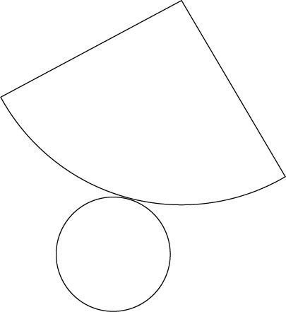

| 視聴率２００％男 | |
| 安達 元一 | |
| (2001) | |
目次
みなさん、放送作家という仕事をご存じでしょうか？
かつて高田文夫さんや故景山民夫さんなどが放送作家ブームを作って下さり、広く世間に認知された職業ではありますが、おそらくその数は、日本全国でも数百人しかいないであろうと思われる珍しい職業の一つです。さらにそのなかで、自称放送作家や放送作家見習いといった若手の方々を除き、第一線で職業として食べていける放送作家というと、たぶん五〇人もいないであろうと思われます。
私もそんな放送作家の一員として、アイデアと原稿に追われる毎日を過ごしています。この本を手にとられたのも何かの縁。こんなちょっと特殊な職業という立場から、ものの見方、アイデアの練り方、そのアイデアで人を説得させるプレゼン術などなどを書いていけたらと思っています。
さて、放送作家という仕事は何なのか？ テレビ番組を作り上げていくうえでの、数あるパートのなかの一つですが、放送作家とはアイデアを売る商売なのです。
実際に番組をつくるのはディレクター、そのためのお金を用意するのがプロデューサー、出演するのはタレント、みなさん、実際の肉体的作業が伴いますが、放送作家とはアイデアだけを売って生きていく、気楽といえば気楽ですが、それだけにだれにも負けないアイデアが必要とされる、厳しい仕事でもあるのです。
ここでプロデューサー、ディレクター、放送作家の関係について、もう少しくわしく説明しておきましょう。
プロデューサーは文字通り番組の全体をプロデュースする役、予算の管理から番組の倫理問題、タレントのキャスティングなどなど、すべての全体図を運営していく立場です。
ディレクターとは番組の内容に関して、すべての決定権を持つもっとも重要な役。プロデューサーは全体的な方向に関しては口を出しますが、内容の詳細に関しては、ディレクターに権限を委譲する傾向にあります。
放送作家とは、このディレクターの頭脳の部分をアシストする役。私も駆け出しのころは、ディレクターと作家はクリエイターとして同じであると勘違いしていましたが、じつはまったく違う職業なのです。
ディレクターは一国一城の主。作家はあちこちの城に出入りして、「こんなもんありまっせ！」と売りつける商人みたいな存在。ですから、いかに自分と近い感性のディレクターと組めるかが、作家として活躍できるかのカギを握っています。
ここらで簡単に自己紹介をしましょう。
大学在学中より放送作家としての仕事をはじめ、現在で一三年目。その間、バラエティー番組一筋でやってきております。
現在担当しているレギュラー番組は、日本テレビ系では『ダウンタウンのガキの使いやあらへんで!!』『ぐるぐるナインティナイン』『踊る！ さんま御殿!!』『伊東家の食卓』『一億人の大質問!? 笑ってコラえて！』。ＴＢＳ系では『ジャングルＴＶタモリの法則』。フジテレビ系では『ＳＭＡＰ×ＳＭＡＰ』『奇跡体験！ アンビリバボー』。テレビ朝日系では『タイムショック21』、そのほか深夜番組も数多く手がけ、現在一四本のレギュラーを回す日々です。
それぞれの番組について、作りあげていく上でのアイデアを、それぞれに提供しなくてはいけない忙しい毎日。まあ、早い話、超売れっ子放送作家ってやつですか。私の担当している番組のすべての視聴率を足すと、週間視聴率二〇〇パーセント、自分では一応「業界一の高視聴率放送作家」を自負しております。
そして私はまた、放送作家界で唯一「バラエティータレント国士無双」を上がった作家でもあります。これは、麻雀の役満である国士無双よろしく、バラエティー界の大御所である、タモリさん、ビートたけしさん、明石家さんまさん、ダウンタウン、ウッチャンナンチャン、とんねるず、ナインティナイン、ＳＭＡＰ、この八大タレントの番組を、同時に構成・担当させてもらうこと。この偉業を達成したのが自慢のひとつでもあります。
そのほか、キャイ～ン、ロンドンブーツ１号２号、ＴＯＫＩＯ、Ｖ６、ジャニーズ......時代を飾る才能たちと仕事をさせていただき、多くのものを生み出し、そして学ばせていただきました。
特に私のなかでは、ダウンタウン、ＳＭＡＰ、ナインティナイン、この三組のタレントさんに対する思い入れは人一倍です。
ダウンタウンとは『ガキの使いやあらへんで!!』、ＳＭＡＰとは『夢がＭＯＲＩＭＯＲＩ』から『ＳＭＡＰ×ＳＭＡＰ』、そしてナインティナインとは『ぐるぐるナインティナイン』と、それぞれのタレントが時代の階段を駆け上がる瞬間を、間近で参加、体験させてもらったことが、私の発想やアイデアを練り上げるうえでまたとない経験となっています。
最初ダウンタウンなどは『ガキの使いやあらへんで!!』で都内でロケをやっていても、だれ一人として振り向きもせず、「見てよ、あれ。何だっけ、ウッチャンナンチャンだっけ？」などとささやかれる始末。それがあれよあれよという間に、芸能界のトップにまで上りつめた、その笑いのセンス。
ＳＭＡＰも最初『夢がＭＯＲＩＭＯＲＩ』でキャスティングされたとき、「こんなジャニーズの六人組（現在は五人組）なんて顔も区別つかないだろうから、それぞれ服の色で〝赤松〟〝青松〟〝黄松〟など色分けして、キャラクターを浸透させよう」という作戦までとった無名な若者たちが、みるみるうちに時代の寵児として栄光をつかみ取った、その才能。
そしてナインティナインも日曜日の夕方、『笑点』の前の枠で『ぐるぐるナインティナイン』を立ち上げ、２クール（六カ月）で終わるだろうといわれていた番組が、トントン拍子にゴールデンタイムのメイン、そして日本テレビの顔となるまで急成長を遂げた、その個性。
〝芸能界ビッグバン〟――これら無名の星たちが、スターダムを駆け上がり、まばゆい輝きを見せる瞬間――それに一度でも立ち会えれば幸運というところ、私は一三年間で早くも三度も立ち会わせてもらい、放送作家として幸運な人間だと思っています。
「というか早い話、私のアイデアと発想で三組ものタレントを時代のトップに押し上げたってわけ!?」
などという自惚れも味わっているのです。
（↓）横を向いていても、下を向いていても、円錐は円錐です。円錐といわれて、上を向いているものしか描けない方は、頭が固すぎます。もちろん、このくらいのバリエーションは描いて欲しいものです。
（↓）さらに、ここまで描けた方は、なかなか頭が柔らかくてよろしい。たしかに円錐といいましたが、どういう円錐とは指定していません。工事現場のパイロンを描こうと、ピエロの帽子を描こうと、円錐には違いありません。図形でなく絵で表現するという発想がある方は、ここまで至ったでしょう。
（↓）つづいて、ここまで描けた方は、かなり天才に近いかもしれません。立体図形ばかりではありません。展開図にすると、これだってもちろん「円錐」です。

（↓）ここまで来ると、屁理屈と思われるかもしれませんが、これだってもちろん「円錐」です。「円錐を描いて」といわれて、迷わずここまでバリエーションが描けた方は、私ごときがお教えすることは、もう何もありません。自分の力を信じて、アイデアマン街道をまっしぐらに突っ走ってください。
ちなみに、この円錐遊び、仲間の放送作家と酒を飲みながら、一晩中やったことがあり、その時は五一二パターンの円錐がつくれました。
この【頭の柔らかさチェック❶】で、何がいいたかったか。それは物事を考える時、いかに自分のなかに多くの選択肢があり、それを用いてアイデアを完成形に向かわせることができるか、ということです。
私たち放送作家の仕事を例にとると、プロデューサーやディレクターに呼ばれて、会議に参加したとします。そこでたとえば何か、「情報系のクイズ番組をやりたいんだけどなあ」と、アイデアを求められた時、プロデューサーやディレクターの頭のなかには、すでに四、五パターンのアイデアはあるものです。
けれども、それをしのぐ、一〇や二〇のアイデアが出せないと、放送作家としては用なしなわけです。
相手の持っている選択肢より、いいにつけ悪いにつけ、多くの選択肢を与えて、アイデアの幅を拡げる、それが放送作家の仕事なのです。
たとえば、「情報系クイズ番組」というと、海外の珍しい風習や文化をクイズにするもの、物の値段をクイズにするもの、料理をメインにしたクイズものなどは、当然、だれでもすぐ思いつくとして、さらなるアイデアを求められるわけです。
情報系クイズといえば、たとえば、
「今、不動産ブームだから、住まいや物件、快適な生活といったものにこだわった、カルトなクイズ番組にしよう」
「ダイエットや健康など、自分の体に関することはだれでも興味がある。だから健康クイズ番組にしよう」
「今までにないものをやりましょう。歴史は案外穴場ですよ。歴史上の偉人がなぜそんなことをしたのか、教科書に載っていない歴史クイズをやりましょう」
「いや、まじめな情報はウケない。実験クイズにしましょう。さまざまなオモシロ実験を繰り広げて、その結果がどうなるかをクイズにしましょう」
「いや、実は今、海外でこんなクイズ番組が流行ってるんですよ」
「いや、やっぱり子供ですよ。子供の素朴な笑っちゃう行動をウォッチングして、それをクイズにしましょう」
「スタジオでふつうに答えるのはつまんないですよ。やっぱマラソンでしょう。マラソンをしながらクイズに答えましょう」
「いや、クイズ問題だけ流して、解答はそっくり来週という、超画期的クイズをやりましょう」
「クイズに答えがあるのがそもそも呪縛だ！ 前代未聞答えないクイズ番組に!!」
などなど、使えるものから使えないものまで、バカげたものでも構わないから、いかに多くのバリエーションを提示できるか。あとはそこから必要なものだけを、取捨選択をしていけばいいのです。
どうもアイデアに詰まって困るという方は、最初から完成形ばかりを求めているのではないでしょうか。アイデアというのは、山ほどのくだらない、使えないアイデアのなかから、やっとのことで絞られて、最終的に使えるものが生まれるのです。
最初から完璧なアイデアなんて、一つもありません。まず、いかに心の遊びやムダな部分を培えるかが、最終的にキレるアイデアを生み出せる源なのです。
この発想のバリエーションというのは、私の場合、日常の仕事のなかでいつでも求められています。それを一日の時間の流れに沿って説明してみましょう。
私の週間スケジュールのなかで、一番心身ともに疲れる火曜日。
まず朝一一時半、渋谷ビデオスタジオにて『世界の北野、足立区のたけし』（フジテレビ系）の打ち合わせからはじまります。
この番組を考えるにあたっては、比較的下ネタも許される深夜番組なので、自由な発想ができるのですが、いかんせん予算が少ない。
ですから単純に自分のやりたい、おもしろいことばっかりを発想すればいいのではなく、低予算でできるもの、しかもＭＣが北野たけしさん、たけしさんのスケジュールはごく限られているので、スタジオ収録のみで短時間でできるもの。純粋なおもしろさの上に、それらの条件が課せられた笑いを考えなくてはならないのです。
つづいて、『世界の北野～』の会議が終わらないうちに、後ろ髪を引かれる思いで抜け出して、一二時半からは麴町の日本テレビで『一億人の大質問!? 笑ってコラえて！』の会議。
この番組は所ジョージさんの「ダーツの旅」でおなじみの、日本列島をさまざまな切り口で旅するドキュメントバラエティー。今のテレビ番組には珍しく、タレントのキャラクター優先ではなく、企画の力で高視聴率を得ている番組です。
この番組は午後七時というゴールデンタイムの放送ですから、先ほどとはまったく頭を変えます。過激な笑いや下ネタなどは頭から排除し、夕食時に家族が揃って楽しめるほのぼのとした番組作りを目指します。しかも日本列島人間探訪ものですので、笑いというよりは、いかに素人のおもしろさを引き出すか、そういった思考が必要とされる番組なのです。
そして、またまた会議の途中で抜け、トリプルブッキングの三本目、午後一時半から六本木のテレビ朝日で『タイムショック21』の会議。
これはもう純然たるクイズ番組。笑いや人間のおもしろい面を引き出すという思考より、いかにクイズとして破綻のないルールを構築するか。みなさんお気づきでないかもしれませんが、クイズ番組というのは、答え方一つでおもしろさがまったく変わってくるものなのです。
たとえば早押しにさせるか、フリップに書かせるか。早押しにするなら、できない人が残っていくというかたちで回答者を追いつめることができるし、フリップ書きにするなら、〝ボケの回答〟で遊べるというふうに、答え方一つとっても、目指すおもしろ味がぜんぜん変わってくるものなのです。
このように理詰めでおもしろさを構築していかなくてはならないのが、クイズ番組における会議のパターンです。
さらに午後三時からは、日本テレビに戻って、『ガキの使いやあらへんで!!』の会議。
この会議も、これまでとは脳ミソの使う場所がまったく変わってきます。この番組の難しいのは、おもしろい笑いを作るというよりは、〝希代の天才〟松本人志の感性にみんなの脳ミソをいかに近づけるかというところ。単純におもしろいことだけ発想すればいいのとはまったく違う、そんな辛さも伴う会議なのです。
そして午後五時からは、同じく日本テレビ内で『伊東家の食卓』の会議。
これまた、まったく違う性格の番組です。目玉焼きを早く焼き上げる方法や、洗濯物を早く乾かす方法など、日常生活の裏ワザを緻密な計算の上に積み重ねていく、笑いとはまったく違う驚きとエンターテインメントを提供するバラエティー。ここまで来ると、脳ミソにいくつの引き出しがあったら対応できるのか、わからなくなってきそうです。
そしてつづいて午後七時から、神奈川県川崎市にある日本テレビの生田スタジオまで移動して、『踊る！ さんま御殿!!』の収録。
これはネタで笑いを作り出すというよりは、明石家さんま師匠を中心とする番組全体の雰囲気を作り上げるのが仕事。これもまた、単純に笑いを作ればいいという作業とは一線を画す脳ミソが必要とされる仕事です。
それが終わって午後一一時ごろ帰宅。
家に帰っても仕事はまだまだ終わらないのが放送作家の辛いところです。ビデオテープを巻き戻し、この日オンエアがあった自分の番組をチェック。アイデアと発想と作業量を詰め込んだ番組が、最終的にどういう形で視聴者のみなさんのもとに届いているのか、それをチェックしなければ次の作業へは進めません。
ところが、この日のオンエアチェックがまた多いこと多いこと。午後七時からオンエアの『伊東家の食卓』、つづいてそのまま八時から放送の『踊る！ さんま御殿!!』、九時からは私の担当する『奇跡体験！ アンビリバボー』（フジテレビ系）のＶＴＲ作りの参考にしようと、ＮＨＫ『プロジェクトＸ』のオンエアチェック、そして一〇時からは『ジャングルＴＶタモリの法則』（ＴＢＳ系）、さらに夜の一二時を過ぎてからは、トーク番組の『ろみひー』（日本テレビ系）、バラエティー番組の『ぜったい！ キャイ～ン』（ＴＢＳ系）。単純にＶＴＲを見るだけで五時間以上の時間が必要とされるのです。
そして意識も失いかける明け方、やっとのことでベッドに就いたかと思うと、翌朝の一〇時から『ジャングルＴＶ～』の構成会議。まさに放送作家とは頭の切り換えと体力が勝負の超肉体労働なのです。
火曜日以外にも、まあバタバタと貧乏暇なしで働きまくっています。不景気の時代に仕事があるだけでうれしいものです。いくらでもやります。ガンガン働かせていただきましょう。
こうスケジュールを見ると、土曜、日曜などは結構休みもあるように見えますが、これがなかなか脳ミソの休まる暇のない生活なのです。放送作家ってのは例えると「毎日が夏休みの最終日、八月三一日」な仕事なんですよ。宿題に追われてソワソワの一日がいつも続くつまり、いい大人なのに明日締め切りの宿題が三六五日ついて回る、そういうものなのです。
会議がない日でも、明日締め切りの原稿がいっぱい。夜家に帰ると、「締め切りが......、締め切りが......」とつねに追いつめられる毎日。ホント休まる暇のない職業なんです。
まあ一三年もこの仕事やっていると、力の抜き方、サボリ方もそこそこ覚えて、なんとか精神のバランスを保っていますが......。
さらに放送作家に必要とされる仕事の一つに、雰囲気作りというものがあります。
タレントにとって一番大切なものは何だと思いますか？
それは「イメージ」です。
長い時間と努力、お金をかけて積み上げてきた現在のイメージ、それを崩されることをタレントは嫌います。特にこれがアーティスト系のタレントとなると人一倍。
以前『ミュージックエンタ』（テレビ朝日系）という番組をやっていたのですが、このときなどその最たるものでした。出演者が滝沢秀明君をはじめとするジャニーズや嵐など。ジャニーズ事務所所属のタレントさんと仕事をするときは、タレントイメージを損なわないように気をつかうものですが、この番組はさらにそこに持ってきて共演者陣に石井竜也さん、そしてあの松田聖子さん！
まさに〝ザ・芸能界〟の生き証人のようなビッグアーティストの集結した番組です。それはそれは台本一つ書くのもたいへんでした。
松田聖子さんはここだけの話、デビュー当時彼女のファンクラブに入っていたぐらいの大ファンで、バラエティー畑一筋で仕事をしてきて初めて御一緒させていただくチャンス、台本を書く筆にもついつい力が入るというものです。
けれども、アーティストの方々は、私がそれまでやってきたようなバラエティーとは、まったく違う価値観に生きているということが、番組が進むにつれわかってきました。
単純な話、笑いなどどうでもいいのです。いかに笑わせるかは二の次、三の次。いかに自分のイメージを、よい方向に演出してもらえるかが問題なのです。
たとえば、アーティストの方たちはハゲづらはかぶらない、それはかぶる意味がないから、かぶるメリットが見つからないから。笑いをとれるかもしれないが、かぶる意味、メリットが優先となるのです。
楽屋などでお話をさせていただくと、ほんと気さくないい方で、よく笑うふつうの女性なのですが、これがことテレビに映る段階となると、
「私個人としてはそのセリフは好きだしわかるけれども、松田聖子はそういうセリフはいわない」
という具合に、彼女のなかでしっかりとした価値観、イメージがあるのです。そのイメージを損なわないような雰囲気作りがとてもたいへんなのです。
たとえばこんなことがありました。彼女がレコーディングでロサンゼルスに渡った際、ついでに番組も便乗させてもらい、「松田聖子ＩＮロサンゼルス」と題して、彼女がロスの街をレポートするという企画をたてたときの話。
そのときせっかくですから、同じロス在住の、元Ｘ‐ＪＡＰＡＮのＹＯＳＨＩＫＩの豪邸を、聖子さんが訪問するというアイデアを出し、その台本も書きました。
ところがファックスで「ＮＯ」が戻ってくるのです。
「松田聖子にＹＯＳＨＩＫＩの豪邸をレポーターとして訪問するようなことはさせられない」
これが彼女サイドの見解なのです。
こんなときあなたならどうしますか？
もうダメだと諦めてしまうでしょうか？
それでは何事も生まれません。ここでとっさに発想を転換する必要があります。
では、具体的にどうすればいいか。
聖子さんがＹＯＳＨＩＫＩの豪邸を訪問レポートするという形ではなく、ＹＯＳＨＩＫＩがどうしても聖子さんを自分の豪邸にご招待したがっている、そう言葉をいい換えればいいだけのことです。
聖子さんサイドには、
「ＹＯＳＨＩＫＩのご招待で伺う」
ＹＯＳＨＩＫＩサイドには、
「松田聖子がどうしても訪ねたいといっているから招いてやってくれ」
こう双方に伝えればいいことなのです。形はどうあれ、ＹＯＳＨＩＫＩと聖子さんが豪邸で対談する映像が撮れればいいわけですから、これで問題は解決となるわけです。
このように自分のやりたいことと相手の希望が一致しないときは、ストレートに自分のアイデアを押しつけてはいけません。この場合、相手に「ＹＥＳ」と言わせるまでの手法と雰囲気作りが大切になってきます。放送作家の仕事にはそんな内容も含まれているのです。
何もこれはアーティストと仕事をするときだけの特別な作業ではなく、バラエティー系のタレントと仕事をするときもつねについて回るものです。
たとえばこんなことがありました。
『ガキの使い～』がまだスタートしたてのころ、私たちスタッフが、ダウンタウンにどうしても漫才をしてほしいことがあったのです。しかしストレートに、
「漫才をやってください」
といったのでは、芸人というのはあまのじゃくなもので、けっして「ＹＥＳ」とはいってくれません。
そこで彼らに漫才をやらせる雰囲気を作る。これが仕事となってくるのです。
あなたならどうしますか？
「とにかくやってくれ」
と拝み倒す？
それではいけません。
そのとき私たちのとった作戦というのは、「漫才をやってほしい」とはひと言も口に出さずに、まずさまざまな企画案を彼らの前にプレゼンしたのです。しかしその企画案というのは、実はどれもちょっと破綻しているもので、どれをとっても「それで行こう」とは言いがたいものばかりでした。もちろん確信犯です。
それに対してダウンタウンが「よし、これで行こう」というはずもなく、われわれの側も、いろいろアイデアを足してみるのだが、彼らから今ひとつ「ＧＯ」が引き出せないレベルのアイデアで止める。そしてみんなで腕組みをして黙りこみ、
「はたしてどうしたらいいんだろう、来週。困ったなあ」
という空気を作り出したのです。
そうこうしているうちに、ダウンタウンのほうから、
「じゃあ来週は漫才でもやろか？」
といい出してきました。
このように単純にアイデアを練り出すだけではなく、自分の思っているアイデアを最終的に通す手腕、それも放送作家にとっては大切な要素の一つなのです。
［問題］
「テレビ局の敏腕プロデューサーと、歌にドラマに大活躍の新人人気アイドルが、実は極秘交際していました。そして事もあろうか、妊娠してしまったのです。これは事務所も大騒ぎ。二人はこれを機に結婚。そして出産を決意しました。
そして世間にバレないように気をつけたところ、何と出産する当日までまったく知られず、人気アイドルは仕事をつづけることができたのです。さて、間違いなく妊娠・出産したのに、なぜ人気アイドルは世間にもバレず、仕事をつづけることができたのでしょう？」
さあ、この問題の答えが、あなたにも分かりますか？ 妊娠して、どんどんお腹は大きくなるのに、出産当日までバレることなく、人気アイドルは仕事をつづけられた。おかしな話ですね。
さあ、じっくり考えてみてください。
［答］
実はこれはあなたの「先入観」を試すテストです。よく問題文を読んでみてください。
「テレビ局の敏腕プロデューサーと人気アイドルの恋」
あなたは先入観で決めつけていませんか？ テレビ局の敏腕プロデューサーといえば男、人気新人アイドルといえば女、そのあなたの先入観が、正解を遠ざけているのです。
「テレビ局の〝女性〟敏腕プロデューサーと人気の新人〝男性〟アイドルの恋」
だったらどうでしょう？ 女性プロデューサーがお腹がどんどん大きくなり出産しようが、テレビで活躍する新人男性アイドルは、何らバレるはずもありません。物事を当たり前に考えてしまう、それがアイデアを生み出す際の大きな壁なのです。
〝一〇〇のムダで役に立たないことが、一つのヒットを生み出す〟
これが私の信条です。ですから、ふだんの生活のなかでも、できるだけほかの人がやらない、ムダでバカなことをやるように心がけています。
みなさんは、どんな遊びをしていますか？
「仕事が忙しくて遊んでいない」なんていう方は論外。遊びの中からこそ、今までだれも思いもつかなかったようなアイデアが生まれるものなのです。
たとえば、「今晩、飲みに行こう」と仲間が集まっても、私たちはふつうの居酒屋なんかには行きません。あるときは上野まで遠征してホモ映画館に潜入し、マッチョなおじさまに襲われそうになったり、あるときは「街のなかにあるものを使って、いかにチャーハンが作れるか大会」などと称し、街路樹や植込みの草を引き抜いて炒め、どれを使えば一番おいしいチャーハンができるか実験してみたり、「人間はどこまでカレーが食えるのか」と、大鍋にカレーを作って、吐くまで食べつづけてみたり......。
またあるときは「歌舞伎町フルコースツアー」と称して、一軒で一品食べたらお会計！ を繰り返して何軒回れるか挑戦したり、ＳＭバーに潜入して、この道三〇年のベテランＭ男オジサンが直腸を肛門から引きずり出すショーを見ながら酒を飲んだり、一人一〇万円ずつ持ち寄って最高級フレンチで最高級ワインを飲んだかと思えば、高田馬場の貧乏学生御用達の居酒屋で一杯七〇円の混ぜものだらけの焼酎を飲んで吐きまくったり......。
とにかく何でもいいんです、それを役に立てようとしてやるんじゃなくて、「おもしろそうだからやってみる」。そんなところから新しいアイデアが生まれるもんだと思っています。
一つ例を挙げますと、私は車の運転免許を持っていません。それでも毎日愛車を運転しています。
実はかつては運転免許を持っていたのですが、書き換えに行くのを忘れていて、免許が失効してしまったのです。
この書き換えに行くのを忘れているということ自体、社会的には落伍者なのかもしれませんが、ここからアイデアの源が湧きはじめるわけです。
まっとうな社会人なら、教習所に通って仮免から受け直す、もしくは、一発免許合格を狙いダメもとで何度か挑戦する、というあたりが、発想のバリエーションの限界でしょう。
しかし私は、そんなみんなと同じやり方で免許を手に入れたのでは、放送作家の名がすたると思い、ほかにどんな免許の手に入れ方があるのか、バリエーションを研究したのです。
政治家の先生のルートを訪ねて、お金を積んで免許をもらってしまう。そんなことも考え、実行に移しましたが、法治国家の日本ではさすがにそれは無理でした。
そこで最終的に私が選択した道は、海外に渡って国際免許をとり、それで日本で運転するという方法。そのためさまざまなルートをたどって、単身フィリピン・マニラに乗り込み、現地法人の社員になって国際免許を取得しました。おかげで現在は日本で運転できるわけです。
おまけに、このフィリピン国際免許取得旅行で、現地の芸能プロダクションの方や、映画製作会社の方と知り合いになり、そこから仕事も広がり、またアイデア的にも「一番いい方法」というテレビ番組の企画書を書き上げることができました。
「一番いい方法」とは、私のように免許がない場合、どう手に入れるのが一番いい方法なのか、ほかにも入手困難な人気アーティストのコンサートチケットを、どう手に入れるのが一番いい方法なのか、ダイエットの方法はさまざまあるが、どれが一番いい方法なのか、といったような、さまざまな「一番いい方法」を、検証・紹介する番組です。
残念ながら、実際の番組にまではなりませんでしたが、この発想や考え方などは、現在、私が担当する『伊東家の食卓』の裏ワザなどに活かされています。
そしてまた、たまの海外旅行もふつうのところには行きません。
たとえばタイ。タイならあなたはどこへ行きます？ タイ料理グルメ三昧、それともビーチでのんびりというあたりが定番でしょう。
でも私はタイの旅行といったら、迷わずバンコク市内にある死体博物館を選びます。
そこは知る人ぞ知るカルトスポット。オリエンタルホテル前からチャオプラーヤ川を溯ること四〇分、大規模な病院のなかに併設されている研究室、そこが死体博物館として一般に公開されているのです。
とにかくホルマリン漬けにされた人間の死体が数百体。一つのビルのあちこちの部屋に、人体が各パーツごとに展示されているのです。
そのなかで一番印象に残ったのが、女性の左手首のホルマリン漬け。左手のみが漬かっているのですが、なんとその真っ白く細い指の薬指にはマリッジリングがはめられているのです。
どんな女性が、どんな理由でホルマリン漬けになっているのか？ そして、いつからそこにあるのか？ その説明はまったくありませんが、ある愛の証がこの先何百年も永遠に時を超え、そこに存在しつづけるかと思うと、何か胸を打たれたのを覚えています。
そして帰国してから、僕は劇場公開用の映画ストーリー『Ｕｎｄｙｉｎｇ Ｌｏｖｅ』というものを書き上げました。これは恋人を亡くした男が、彼女の死体を連れたまま逃避行をつづけるという物語。内容が内容ゆえ、映画化されるメドはまだ立っていませんが、かねてから興味のあった死体博物館に行ってみたことにより、こんなストーリーも生まれたのです。
「免許がなくなったから、教習所に行こう」「海外旅行だから南の島に行こう」、こんなストレートな発想からは生まれなかったものが、アイデアのバリエーションを拡げたことによって、さまざま生まれたわけです。とにかく、他人と違うアイデアを生み出したければ、他人と同じでは絶対にいけません。
選択の道に迷った時は、ふだん行かないほう、絶対選ばないほうに、どんどん行ってみましょう。きっとそこには、あなたが今まで経験したこともなかったアイデアの泉が、こんこんと湧き出ているはずです。
ところで、私の放送作家人生のなかで、一番多くの影響を受けた番組は、やはり『ダウンタウンのガキの使いやあらへんで!!』です。
一九八九年にスタートしたこの番組、まだ駆け出しの放送作家だった私が、日本テレビの菅プロデューサーと組み、企画書を書いて、番組タイトルも付けて、ゼロから手をかけて育ててきた番組。当時、まだ東京では有名でなかったダウンタウンと組んでの番組は、「すぐ終わるだろう」といわれながら、深夜の片隅でそっとスタートしました。
それが今となっては、一二年も続く人気長寿番組に。ダウンタウンも〝誰だかよく分からん大阪の芸人〟という存在から、芸能界のトップまで駆け上り、私自身もその一部始終を一番間近で体験できた、とても貴重な番組です。
しかしそれ以上に、稀代の天才・松本人志という人物と、つねに接してこれたことが、私のアイデア、発想を育てる上で、どれほどためになったか分かりません。もちろん松本人志のおもしろさを引き出し、それを操縦する浜田雅功あってのダウンタウンですが、私たち番組担当放送作家は、つねに松本人志と同じ楽屋で時を過ごし、企画をいっしょに考えてきたこともあり、松本人志の影響をより濃く受けています。
私もそこそこ頭も柔らかく、アイデアも豊富な人間だという自負はあるのですが、さすがに松本人志にはかなわないと常々思わされます。
ここで『ガキの使い～』の、いつもの楽屋風景を紹介しましょう。収録は毎週水曜日、都内各所のホールで行われます。
夕方五時ぐらいから、ダウンタウン、山崎邦正、ココリコといった出演者のみなさんがばらばらと集まりはじめ、そこに私たちスタッフも加わっての、まずはオープニング企画の収録。それが終わると、トーク本番まで一時間ばかり、ムダ話の時間となります。
ここでとりたてて何を話すというわけではないのですが、雑談のなかから、いろいろなものが生まれているのです。
たとえば山崎やココリコを相手に、
「弱そうな動物の絵を描いて」
「はい、この写真でひと言」
などといった遊びがはじまる。この「遊び」が〝松本人志流発想塾〟になっており、トークへ向けてのウォーミングアップとなっているようです。雑誌やらお菓子やら弁当やらがあふれる楽屋で、こうして一時間ほどバカ話をした後、トークの収録となります。
トークの収録が終わるのが、だいたい夜の九時ごろ。それから来週のオープニングで何をするかを決める「オープニング会議」となるわけです。
ここからが、一同の発想がぶつかりあう時間。「こんなのはどうでしょう」「あんなのはどうでしょう」と、さまざまな意見を出しあうなかで、次第に、来週何をやるか、一つの企画が生まれてくるのです。
いつも驚かされる松本人志の発想力ですが、私が一番印象に残っているエピソードとして、こんなものがあります。
ある日、例によって松本人志がお題を投げ、それをみんながいつものように、意見を出しあう。その日は、
「人の悩みをいかにバカな発想で解決するか」
というお題でした。
「歩いていると、ガムが靴底に付いてしまいました。こんな時、どうしたらいいのでしょう？」
という悩みから、それをどう解決するのかを、みなで話しあっていたのです。
「あらかじめ靴底が薄いビニールで何重にもなっている靴を履いておき、踏んだら、ビニールを一枚ずつ剥ぐようにする」
「ガムとり専門の箸が靴底に付いている靴にすればいい」
などと、一同、あれこれ話しあっていたところ、少しの間黙っていた松本人志がひと言、
「それが違うねん。何でみんな、ガムを取ろうとするん？」
といったのです。このひと言が私には衝撃でした。
ガムをいかにとるか、そればかりにみなの発想が向かっていくところ、松本人志はこんなふうに考えていたのです。
「右足にガムが付いてネバネバするなら、左足にもわざとガムを付ければいい。そうすれば両足、均等にネバネバになって気にならなくなる」
「取るのではなく、さらに付ける」この私たち凡人とはまったく違う、一八〇度逆の発想で解決策を見出す、まさに〝天才・松本人志、ここにあり〟と思わされた瞬間です。
「靴底に付いたガムは取らなくてはいけない」
その先入観が私たちの発想を縮めていたのです。一つの問題をいかに多くの切り口で見ることができるか。先入観から解放され、どれだけ多くのパターンの解決策を見いだせるか、それが発想における勝負なのです。
［問題］
それではみなさん、「社長」、この単語に何か言葉を付けて、新しい単語をつくってみてください。
［答］
どんな言葉ができましたか？
「ハゲ社長」
「タコ社長」
「ヒゲ社長」
そんなのは当たり前です。「社長」という人物に形容詞を付けただけで、発想が少しも拡がっていません。
もちろん、この問題に正解はないのですが、たとえば、
「ペンション 社長」
「国立社長競技場」
「社長風味」
「社長汁」
「社長、はじめました」
なんてのはどうでしょう？
「ペンション 社長」――それはどんなところなんだ、客としてどんな人が集まるんだ、どんなサービスがあるんだ、どんな料理が出るんだ、何か思わず発想が拡がるような言葉じゃありませんか。
このように、「社長」という単語ひとつとっても、言葉遊びをすることで、どこまでもおもしろくなっていくのです。
「国立社長競技場」――どこにあるんだ、どんな設備なんだ、社長ばっかりが集まって競技をするのか、いや、観客が全員社長で、何か特別な競技を見るのか、どんな競技をやらせるんだ、金に物をいわせてすごいことをやらせるのか......。
ほら、発想がどんどん拡がりませんか？
ここからは、実際にテレビ番組が生まれるまでの会議の様子に沿って、どう発想し、それをかたちにしていくのかということを、具体的にご説明します。
これから新番組の企画会議がはじまるとしましょう。会議室に集まるのは、プロデューサー、ディレクター、そして私たちのような放送作家が数人。
「さあ、ヒットする新番組、何を作ろう」――まさにアイデアと発想の勝負です。
けれどもいきなり、「こんな番組を作ろう」などといい出しても、そうかんたんに企画がまとまるものではありません。最初は雑談のなかからキーワード探しがはじまります。
今、時代はどこに向かっているのか。視聴者のみなさんが求めるものは何なのか。そんな大層なことを直接話すわけではありませんが、最近身の回りでおもしろいと思ったこと、ちょっとこんなのが流行ってる、こんなバカなことをやっておもしろかったなどと、雑談を交わすなかから、何となく企画としてヒットしそうなキーワードを探すのが、最初の作業です。
基本的にはアットホームな感じで会議は進行します。発想を拡げるために雑誌や過去の関連企画のＶＴＲなどを用意することもありますが、この段階でそんなものからアイデアを拾っているようでは一流とはいえません。
日ごろの生活のなかで、自分が持った興味や関心などを自由にぶつけあう、それがいわゆる「ブレスト（ブレインストーミング）」なのです。バラエティーなんだから楽しくやろうよ、ということで、みんなで腕組みして、シ～ンと考え込むような会議はめったにありません。とにかくバカ話、ムダ話タイムです。
この段階で口ごもったり、口下手になってしまうような人は、放送作家としてはやっていけません。何も最初から、みんなを納得させるキーワードをズバリいえといっているわけではありません。
バカ話のなかからキーワードを探そうというのですから、この段階ではとんだ的外れなことでも構いません。どんどんとアイデアを出しちゃいましょう。ここでも発想の豊かさが、まずは問われるのです。
ここでちょっと話はそれますが、放送作家がいつも念頭においている、「時代」とか「大衆」ということについて少しお話ししましょう。
「大衆」とか「時代」とかいうものは、ホントつかみどころのないもので、いつも苦労させられますが、よくよく冷静になって考えてみると、そこには一つの大きな意志が、いつの時代にもあるように思うのです。
テレビを例にとると、一九六〇年代の高度経済成長期には「科学」や「文明」や「経済」を謳歌する番組がヒットしたものです。たとえばアニメでは『鉄腕アトム』、バラエティー番組では『ズバリ！ 当てましょう』のようなテレビや冷蔵庫といった流行の大型電化製品を賞品にするクイズ番組など。これは時代、そして大衆の目が、そちらに向いていたということなのです。
そして七〇年代に入って高度経済成長の弊害がいわれはじめたころ、次に来たキーワードが「自然回帰」。突っ走りすぎた経済や文明に対し、自分たち人間も自然の一部であるということを見直そうといった風潮が主流になってきます。
八〇年代のバブル期は、一億総国民が毎日夢を見ているような浮かれ状態。そんな時代には、『オレたちひょうきん族』などのような、とにかくハッピーなお笑い番組が主流になりました。
九〇年代に入ってバブルが崩壊し、日常生活に少々陰鬱な空気が立ちこめるようになると、自分の足元を見つめ直す番組、バラエティーで言うと、「節約」「どケチ」「大家族」といったリアリティーのあるものが主流になりはじめます。
その名残りで現在も、どちらかというと情報性の強い、身の回り三メートル以内を扱うタイプの番組、たとえば私の担当している『伊東家の食卓』のようなものが、ヒットする風潮があります。その一方、純粋なコント番組といったものも最近復活しつつあるようで、また時代は混迷に入りつつあるように思われます。
〝視聴率＝大衆の意志＝アメーバのようなもの〟
と私は常々感じています。個人個人それぞれ趣味、嗜好というものがあり、それは千差万別なのですが、その総意となると、ごく単純な原理で動くアメーバのようなものになると思うんです。つまり、
〝より美味しいエサのあるほうへ動こう〟
ということ。アメーバのなかの個々人は、それぞれいろんな複雑な意志を持っているのに、全体としては単純に美味しいエサのほうへ動いていく。そして動き出すと、なんとなく全員付いていく......それが視聴率の仕組みのような気がしています。その美味しいエサというのが時代によって何に変わるのか、その見極めが楽に出来ればいいんですけど、なかなかグルメなアメーバですから、そう簡単に好みは教えてくれません。
どう時代のキーワードを見つけだすか、大衆の意志を読みとるか。誰よりも早くそれに気づいた人間が、ヒットを勝ちとってきているのです。
「大衆の意志」ということについて、もう少しお話ししてみましょう。
かつて、『笑っていいとも』（フジテレビ系）を担当していたころ、ほぼ同時期に、二つのテーマで一般の方々に募集を掛けました。
まず一つは、「美人ママ大集合」。これは「私、子供がいるのに、こんなにイケてるんです」という内容の募集。
もう一つは、「デブカジ大募集」。「私ってデブなのに、こんなにカジュアルでおしゃれなんです」という〝おしゃれデブ〟の募集です。
その結果はどうなったと思います？
「美人ママ」のほうは、毎週段ボール箱がいっぱいになるほどの、山のような応募があったのですが、一方、「デブカジ」のほうは、毎週一〇通に満たないほどの少なさ。世のなかには美人ママの数も、太っている人の数も、同じくらいであろうと思うのに、なぜこれほどまでに大衆のウケが違ったのでしょう。
しかし、人々の潜在的意識、潜在的欲求というものを考えると、ごく当たり前の結果にすぎないのです。まず、「美人ママ」に関しては、二〇代後半から三〇代前半の女性は、だれもが、
「私はまだまだイケてるはず、子供がいるようになんて見えないはずよ」
と思うもの。
しかも子供といっしょにテレビに出られるなんて、これはまたとない、いい記念。このように、だれもが潜在的に「そうしてみたい」と思っていた欲求を満足させる企画なのだから、段ボール箱いっぱいの応募もうなずけるというものです。
一方、「デブカジ」のほうは、
「太っている人は基本的に、自分の姿を自信を持って人に見せたがらないもの」
という点に、考えが至らなかったための失敗でした。自分が太っていることに関して、「これでいい」と思っている人はごく少数。太っている人のほとんどは、「この状態はよくない」と潜在的に思っているもの。それなのに、その体をテレビで見せろというんですから、無理な要求というものだったのです。
このように、人間の基本的な欲求などというものにも、発想の基本は潜んでいます。しかし、これに時代の雰囲気がミックスされたり、流行が影響を与えたり、旬のタレントのパワーが加わったりすることで、どんな企画がヒットするかおいそれと読めないところが、またおもしろいところでもあるのですが。
さて、企画会議に話を戻しましょう。
企画の大本となるキーワードについてですが、いつの時代にも人々にウケる普遍的なものがいくつかあります。たとえば、「グルメ」「お金」「健康」「知的好奇心を満足させるもの」などなど。
それを念頭に置きながら、今の時代の空気は何を求めているのかをまず考えます。
たとえば今なら何でしょう。そこでさまざまなアイデアを、ブレーンストーミングしながらみんなで出しあうわけです。
まず最近、周りを見回して、どんなものがヒットしているのだろう。たとえば今のテレビ界で言えば『ガチンコ！』（ＴＢＳ系）。あれが演出なのかどうかはヌキにして、若者たちが感情をムキ出しにぶつかりあう姿は視聴者にウケています。
そのほか、たとえば何でしょう。たとえば『進ぬ！ 電波少年』（日本テレビ系）。目的を達成するため困難な状況を乗り切る若手芸人の姿が、これまた広く世間にウケているようです。
このような、今どんなものがウケているかについての漠然とした話のなかから、共通点を見つける作業がはじまります。
『ガチンコ！』や『電波少年』などを考えると、その共通点は「限界」というキーワードではないでしょうか。困難な状況に追い込まれ限界に達した人間がどんな行動をとるのか、その人間ドラマが時代に合っているように思われます。
一方、海外に目を向けると、アメリカの『サバイバー』という番組が世界的な大ヒットを記録しています。これは南シナ海の無人島で一六人の一般人男女にサバイバル生活をさせ、三日ごとの参加者どうしの投票により一人ずつ外していく、そこで最後に残った一人が一〇〇万ドルの賞金を獲得するというルールのバラエティーです。
参加者が無人島で食物を確保したり、参加者どうしが争う様子などをカメラが克明に追っていく。追い詰められた人間の葛藤やぶつかりが、世界中の人たちの注目を集めているのです。
また、オランダの『ビッグブラザー』という番組も大ヒットを記録。ある一軒家のなかに、これも同じく一般公募の男女一〇人で生活させ、その生活の様子をのぞき見しているだけの番組なのですが、こちらも高視聴率を記録しているといいます。
このようなさまざまな情報を「限界」というキーワードに載せていくことで、どんな番組にしていくのか、だんだん形づくられていきます。アイデアを現実の形にするためにも、いかに多くの情報が自分の脳にインプットされているか、というのは大切なことでしょう。
この場合「限界」に、『サバイバー』や『ビッグブラザー』などの情報が加わることによって、「監禁」というキーワードはおもしろいのじゃないか、というふうに話が進むこともあります。
たとえば一九九一年、ＮＡＳＡがアリゾナ州の砂漠に、熱帯雨林や草原、砂漠など地球環境をミニチュア化した完全密閉のガラスドームをつくり、そのなかで男女数人の研究者を二年間生活させるという、「バイオスフィア２」なる実験がありました。これは来たるべき宇宙時代に、空気から水、食物まで、すべて完全に自給自足できる生活が送れるのか、というのがテーマでした。
その過程で、二酸化炭素の量が過剰になり、ある種の虫が大量発生したり、研究者たちの精神状況がおかしくなったりと、人間観察としては、かなり興味深いものであったといいます。
こんな情報を一つ加えることにより、「限界」「監禁」というキーワードから、どんな番組をつくったらいいのか、だんだんイメージが固まってくる。さらにここにまたアイデアを足す、さらにここにまた情報を足す......。
ここで、かつてアメリカのスタンフォード大学の心理学研究室において、一定の広さの部屋に二、三人の人間を閉じ込めた場合と、同じ部屋に十数人閉じ込めた場合の、時間経過による、それぞれの部屋の人間の行動の違いを実験したというのを思い出しました。
二、三人で監禁された場合は、数十時間に及んでも、それぞれが今までの生活と同じように、規律やモラル、道徳を守り正常に生活したにもかかわらず、十数人で監禁された場合は、みながイライラしだし、攻撃的になり、やがて会話がなくなり、モラルは低下、数時間で争いがはじまるという結果となったそうです。これは心理学における「パーソナルスペース」という問題に関係しています。
ここまでくると、人間を「監禁」し「限界」を探るというところに、「心理学」の要素を加えることによって、一つの番組として成立するのではないか、と話が進んでいくわけです。
このように番組作りの会議では、まず人間の普遍的にある、根本的欲求に基づいたキーワードをベースに話をスタートさせます。そこに加えて、今の時代を反映する、新しいキーワードの要素を考えるのです。
キーワードが絞られたら、そこにあらゆる方面から、いろいろな人間がアイデアを足す。その過程では、それまで各自が自分のなかに蓄積しておいた情報を引き出しあって、提示する。
その情報によって、漠然としたキーワードから番組が形作られはじめる、といった経過を踏むわけです。これは番組作りのみならず、どんなクリエイティブな場面でも有効な方法ではないでしょうか。
このような会議を行うなかで、私たちがいつも暗黙のうちに守る一つのルールがあります。
それは、
〝他人の意見を否定しない〟
このルールが分からない人間がいると、アイデアや発想が拡がらず、まったく無意味な会議となることが多いのです。
たとえば、先ほどの会議を例にとると、
「最近、『ガチンコ！』や『電波少年』などがおもしろいから、あんな感じの番組がおもしろいんじゃないかな」
というアイデアを出した時に、
「それじゃパクリになるからやめようよ」
と言ってしまう人間。
「人間を監禁したらおもしろいんじゃないかな」
というアイデアを出した時に、
「それは道徳的に許されないから、そんなのダメだよ」
と言ってしまう人間。
だれも会議の最初の段階では、自分のいっていることが一〇〇パーセント正しいなんて、けっして思っていません。そのアイデアに対して、ダメな部分は山のように思いついているが、もしかしたらそのアイデアにみんなで発想を載せあうことによって、何かが生まれるかもしれない、そこでダメなことも十分あるのは承知でアイデアを出すわけです。それなのに、それを端から否定するような人間がいると、発想はまったく拡がらないのです。
みなさんにいいたいのは、会議に参加している時や自分ひとりでアイデアを練っている時、まずは否定しないで、すべてのことを肯定してみましょう、ということです。
最終的に形をつくる段階で否定的部分は検証するとして、アイデアと発想を拡げるためには、最初すべて肯定する。肯定したところに、どんどんとアイデアを積み重ねてみる、それが大切なのです。
ここで、実際にアメリカのＧＥ（ジェネラル・エレクトリック）という会社であった話をご紹介しましょう。
他社製品との性能の差がなく、売り上げが落ち込んでいたＧＥのトースター。どうしたら他社にない画期的なトースターが生み出せるのか？
その製品開発会議の場で、一人の若手社員がこんなキーワードの連鎖を見せたそうです。
トースター
↓
使わないでしまっていると、いつもネズミが寄ってくる
↓
ネズミを寄ってこなくしたい
↓
トースターにネズミ取り器をつける
ということで、「ネズミ取り器つきトースター」というのを提案したのです。
これは彼なりの立派な連想術。しかし「ネズミ取り器つきトースター」などというのはどう考えても商品としては考えられません。
そこで上司が、
「お前、なんてバカなことをいっているんだ。そんな商品売れるわけないじゃないか」
と否定してしまったらそこで終わり。
しかし彼の上司は、彼のアイデアの発想を受け、こうアイデアの発想をつなげたそうです。
ネズミ取り器つきトースター
↓
ネズミが寄ってくる原因はトースターの底にパン屑が溜まることにある
↓
ではパン屑を溜めなければいい
ということで「パン屑が溜まらないトースター」というのを開発したところ、これが飛ぶように売れ、ＧＥの業績は一気に急上昇したそうです。
このように、アイデアの連想を止めることなく続ける。途中ではけっして否定しない。そのルールを守ることにより、一つの会社を救うこともあるのです。
［問題］
同じ材質でできた、同じ重さの二個のボールがあります。この二つのボールを、同じ斜面に沿って転がしたところ、一つは斜面の途中で止まり、一つは斜面の下まで転がっていきました。
さあ、なぜこんな状況が起きたのでしょう？
もちろん止まったほうのボールには、糸がついていたり、また斜面の途中に障害物を置いていたなどということはありません。
さあ、考えてみましょう。
［答］
これはあなたの「発想を積み重ねる力」を試したものです。正解に至るまで、二つの発想を頭のなかで積み重ねなくてはならないのです。
まず一つは、「同じ材質でできた、同じ重さの二個のボール」と聞いてすぐに、この二つが「まったく同じでない」というところに、気づかなければいけません。つまり材質が同じで、重さが同じだけなのです。他はもちろん違って構わないわけです。
もう、おわかりでしょう。そう、二つのボールの一方は、中身の詰まったボール、そしてもう一方は、中身が空洞になっているボールということです。
正解に至るまでには、もう一つ発想が必要。中身の詰まったボールは下まで転がり、空洞のボールは途中で止まる、このような状況を、どうしたら生み出すことができるのか、ここを乗り越えると、正解があります。正解まであと一歩！ もう少し考えてみてください!!
「斜面の途中まで水が満ちており、斜面を転がってきた空洞のボールは、水のところで止まり、中身の詰まったボールは、水のなか、さらに下のほうまで転がっていった」
これが正解です。
アイデア、発想というのは、どの段階で諦めていいというものではありません。正解に至るまで、いくらでも高く積み上げる努力をしましょう。
もうひとつ、会議において発想やアイデアを拡げる上でのタブーについてお話ししましょう。
『ガキの使い～』では、スタート当時からスタッフ全員の間に暗黙の掟があります。それは、
〝「できない」という言葉を絶対いってはいけない〟
というものです。会議で「ＮＯ」はいってはいけない、と同じように、『ガキの使い～』の楽屋では「できない」はいってはいけないのです。
これはなぜかというと、楽屋のなかで毎週一つ、オープニングのネタを作らなければならない、そこで発想を拡げる「足し」になるものであれば、どんなものでもやってみようという精神からなのです。
それに加えて天才・松本人志の突飛な発想にわれわれスタッフ一同がついていき、さらにおたがいの発想を高めあうためにも「できない」などとはいえないのです。
たとえばいきなり楽屋にあるシュークリームをとって、
「このシュークリームでちょっと二、三ボケてみて」
「うーん、じゃあ菅さんとちょっとホモってみて」
「タバコを背中で消せるんとちゃうん？ ちょっと背中で消してみて」
雑誌を急に開いて、
「はい、この写真にひと言ツッコんで」
などなど、別にそこでスベッたって構わないのです。とにかくやることが大切。やることによってそれがおもしろいのかおもしろくないのか、どうすればおもしろくなるのか、それらがわかってくるのです。
「じゃあちょっとスポイトで熱湯を腕にかけてみてよ」
っていわれたときに
「そんなことできませんよ！」
と返したのでは興ざめだし、せっかく拡がりかけた発想を潰してしまう。このように［できる・できない］ではなく［必ずやる］。やることから何かが生まれる。そんな空間が発想を高めるためにはとても大切なのです。
さらに、この［できる・できない］に関して、最近の若手スタッフに対して私自身いいたいことがあります。それは、
〝「できない理由を考える」のではなくて「できる方法を考える」〟
これが大切だと思うのです。
それはわれわれ作家やディレクターなどは無理な発注をします。来週の収録までにアレを用意しろ、コレを用意しろ、こんなシミュレーションをやってみろ......。でもそれに関して、目の前に与えられた課題だけを処理するだけでいい、というものではないのです。
ある番組のＡＤさんに、
「来週までに工藤静香の〝そっくりさん〟を探しといて」
と頼んだときのこと。
その一週間後、
「どうなったか？」
と聞くと、彼は
「〝そっくりさん〟の事務所に電話しましたが、今工藤静香の〝そっくりさん〟はいませんでした。そして六本木のショーパブにも行ってみて、いたのはいたんですが、ぜんぜん似ていませんでした。以上です」
というのです。
おいおい、ちょっと待てよと思いませんか？
たしかに工藤静香の〝そっくりさん〟を探すようにといわれたＡＤさんの仕事の責任としては、プロダクションに電話し、ショーパブを回って「見つかりませんでした」、それで十分かもしれません。でも、そういうことではないでしょう。
工藤静香の〝そっくりさん〟が見つからなければ、翌週の収録で一つの企画が潰れてしまう、そこまで気が回らないのです。自分に与えられた担当の仕事「工藤静香の〝そっくりさん〟を探す」さえ結論が出ていれば番組全体がどうなっても構わない、ましてや企画が潰れることなど関係ない、というそのスタンスが許せないのです。
「調べてみましたができませんでした」
できない理由としては正当なものだからそれが結果です、という態度が許せないのです。
何もこの世界、お役所仕事をしているわけではありません。できないならどういうふうにすればできるのか、逆に代案としてどんなものがあるのか、そこまで考えるのがプロではないでしょうか。
私が所属する放送作家事務所の若手のなかで、
「それに関しては本屋に行って調べてみましたが、関連の本がありませんでした」
などという寝ぼけた報告をする奴がいるのですが、そんな奴はホント殺してやりたくなります。「本屋に行ってなかったから、それが結論です」。どうしてそのような甘い考えでプロとして仕事が勤まるのでしょうか。
本屋になかったら図書館に行く。図書館になかったら電話で関係の会社に問い合わせる。それがダメだったら、大学の研究所に行って聞いてみる。いくらでも答えを出す方法はあるはずです。とにかくできない理由を見つけるのではない、できる方法を考える、これを私は強くいいたいのです。
われわれテレビ業界でよく使う言葉に、「もうイーハン（一翻）上げる」というのがあります。元々は、マージャン用語で、「もう一段手役を高くしよう」という意味ですが、ここでは、もうこれでおもしろさは十分、と諦めないで、少しでもおもしろさを積み重ねるようにしよう、ということをいいたいのです。
つまるところ、発想もアイデアも、この自分に対する厳しさが、すべてではないでしょうか。自分のなかで、「これはおもしろい、これで満足」と思っても、その合格ラインが他人の合格ラインより低かったら、あなたは「発想力の乏しい、アイデアの涌かない、ダメなやつ」という烙印を押されてしまいます。
だれも発想の能力差に、そう大きなものがあるとは思えません。要はこの、合格ラインやＯＫを出す、自分への厳しさがすべてだと思うのです。「もうこのへんでいいんじゃないか」と諦めてしまったらそれまで。「もっと何かあるはずだ」と思えば思うほど、あなたは周りのだれにも負けないアイデアマンになっていくのです。
たとえば、あなたが働いている業界でもそうだと思いますが、私たちテレビ業界でも、ある程度の基礎点というものがあります。たとえば、ここにある新番組の企画書があるとします。その企画書のなかに、まずは基礎点をいくつ盛り込んでいるかを、検証してみるのです。
その基礎点というのは、たとえば分かりやすいところでいうと、「動物」「子供」「外国人」「クイズ」「ドッキリ」「お金」「健康」「情報」「流行」などなど、いいあげたらキリがありませんが、まずその企画の基礎点の部分で、どのぐらい点数が達しているか、検証してみます。
その場合、ある程度のクウォリティーに達していると思っても、さらにその上に、あなた自身の工夫として、もっとおもしろい見せ方、もっとおもしろいアイデアの載せ方がないか考え、あればそこにどんどん積み上げていくのです。
たとえば、分かりやすい例でいうと、グルメ番組。タレントがおいしいものを食べて、その感想をいう。これで基本的にはグルメ番組として成立しますが、これでＯＫを出してしまったら、あまりにも工夫がなさすぎます。周りの人もそれでいいとはいってくれないでしょう。
そこで単純に、タレントがおいしいものを食べる、この上にどれだけアイデアを積み重ねられるかを自問自答していくのです。
たとえば値段。ただ、おいしいものを食べるのではなく、これはいくらぐらいするのかという、値段を予想しながら食べる。これで、一つおもしろさが載っかります。
さらに、その値段を、だれが一番近く当てられるのか、クイズと競争という形式を持ち込む。これでさらにおもしろくなります。
これでまだいいと思ってはいけません。さらにその先に、一番点数の低い人が全員の分を自腹で払う、こうしてタレントを追い詰めることで緊張感が生まれ、さらにおもしろさを増します。
さあ、ここまで来れば、もうお分かりでしょう。私が構成を担当している『ぐるぐるナイナイ』のヒット企画、「ゴチになります!!」は、ただのグルメ番組から、こういうアイデアを載せることによって、生まれたのです。
しかし、これではまだ足りません。実際にオンエアになるまでは、ふつうにやるのではなく、その上にさらにキャラクターを載せようということになります。
岡村くんをはじめ、全員にガクランを着せて応援団風のキャラクターを載せてみたり、さらに岡村くんの決めゼリフ、「おいし～い！」というのを絶叫することにより、彼がもっとおもしろく見えるために、彼のキャラクターを際立たせたり、お金が足らなくなったら、持ち物を質に入れるという質草制を導入したりと、アイデアは足そうと思えば無限に足せるのです。
そして、その足して積み重ねたアイデアが、世間一般の人がＯＫと思うアイデアより上に行っていれば、おもしろい企画として、みなさんに褒めていただけるようになるのです。
このように、あなたがアイデア、発想を生み出す上での最大の敵は、自分自身です。アイデアを生み出すための手法はさまざまありますが、それにＯＫを出すあなたの気持ち、それをもっともっと高い位置まで引き上げましょう。そうすれば、アイデア、発想というのは、自ずとクウォリティーの高いものになるのです。
話がだいぶそれてしまいましたが、まあ、このように会議を進めていくなかで、しだいに番組の全体像がおぼろげながら見えてきます。さらにその先に細かい構成やコーナーの詳細を詰め、会議は進行していくのです。
昔はよく、業界全体が寝ていないのを自慢していたものです。そんな時代は、夜の十二時から集合し、朝七時までの会議なんてザラでしたが、最近ではその効率の悪さに気づいたらしく、どの会議も二時間程度で終わります。
長くても三時間。人間が集中してものごとを考えられるのは、それが限界です。二時間で区切るその代わり、週に三回会議をする。そんなスマートな企画会議が多くなりつつあるのはうれしいかぎりです。
これからテレビの世界での企画書についてお話しします。
企画書というのは、業種により、さまざまな書き方のセオリーというものがあるでしょうから、これからお話しすることは、一概に役に立たないかもしれませんが、なにかの参考にはなると思います。
私が一三年間の放送作家生活のなかで、いったいどれぐらいの企画書を書いたのか、いい機会だと思い数えてみたところ、いくつあったと思いますか？
一三年間で書いた企画書は五八〇本。まあ、どちらかというと多いほうでしょう。
しかし、これは私が一三年間の作家生活のなかで、五八〇もの番組を作ったということではなく、これらのほとんどがボツになっているのです。では、五八〇本の企画書のなかで、実際企画が通り、番組になったものはいくつあったと思いますか？
ざっと数えたところ、三〇から四〇ぐらいでした。採用確率約五パーセント。かなり低いと思われるかもしれませんが、実はこれ、テレビの世界では、ちょっと自慢できるほどの高採用率なのです。
過去の企画書をひっくり返してみると、そのなかには『ガキの使いやあらへんで!!』、『ぐるぐるナインティナイン』など、当時何気なくさらさらと書いた企画書が、今や大ヒット番組へと成長したという、まさに歴史のはじまりの一ページを感じさせるものもいくつかあります。（次に『ぐるナイ』の例）
それらの企画書を書く上での工夫を、いくつかお話ししましょう。
あまり細かなテクニック論をいっても仕方ないので、大きなところで、まず第一に、
〝内容がひと言で伝わる〟
これが大切です。「この番組はどこがおもしろい？」「この番組はどういう番組？」という説明が、ひと言で説明できること。ここに多くの言葉を費やさなければならない企画というのは、よい企画ではないのです。
企画書の書き方を教えてもらったのは、私が駆け出しのころたいへんお世話になった「ジャパンプロデュース」という制作会社、代表作は『いたずらウォッチング』『うちら陽気なオバタリアン』、最近では『愛する二人別れる二人』など、素人さんの素の表情を、何かを仕掛けることによって引き出し、それをウォッチング形式で見せていくのが得意な会社です。
「ジャパンプロデュース」の制作方針が、とにかくひと言で説明できること。とにかくどの企画も「何をやりたいんだ」というのがひと言で説明できる素晴らしい企画ばかりです。
たとえば、
『いたずらウォッチング』→「いたずらをするドッキリ番組」
『うちら陽気なオバタリアン』→「オバサンのおもしろい行動を見る番組」
『愛する二人別れる二人』→「夫婦ゲンカをする番組」
とにかく企画を通すのが上手な会社です。私もこの会社の企画書をたくさん書かせていただいたことによって、そのノウハウを十分吸収させていただいたものです。
つづいて私が企画書を書くときに信条としていることは、
〝時代の流れや現状を分析し、わかりやすい例をたくさん出す〟
ということです。早い話が企画書というのは、自分の考えていることを他人に納得させるもの。独りよがりの説明や自己中心的な書き方ではいけません。自分の考えていることというのは、思った以上に相手には伝わらないものです。
そこを誠意を込めて、
「現在世のなかはこういう状況だから、こういう企画が求められているのです。例を挙げると、こんなことも、こんなことも、こんなことも、今この企画が求められている理由ではないでしょうか」
といって相手をその気にさせる。早い話が「この企画はおもしろい」という洗脳をかけていくのと同じ作業だと思うのです。
今自分がこうして書いている一〇ページ足らずの紙切れが、採用されるかされないかにより、それに携わるスタッフ、放送作家、制作会社、美術、技術、そしてタレントさんなど数百人の人々、そして数億のお金が動く。その重さを知れば、走り書きでは企画書は書けないはずです。（次に例）
そしてもう一つ、私が企画書を書くときに注意しているのが、
〝文章を読みながら、映像を見たような気分になる〟
こと。
そもそもテレビ番組という、最終ゴールが映像で仕上がるものを、企画書の段階では文章で説明する、そこに大きな矛盾があるのです。本来ならば、実際にどんな番組がやりたいのかサンプル映像を作り、そのＶＴＲを見せながらプレゼンするのが最も効果的なのですが、そんな予算があるはずもなく、仕方なく紙でプレゼンせざるを得ないのです。
しかし、最終的にどういう映像に仕上がるかを想像してもらうにも、読むほうのイマジネーション力によってかなり差が出てしまいます。文字による説明一辺倒では、なかなか伝わらないものなのです。
そこで私の企画書の書き方は、実際にテレビ番組の進行を実況中継していくように、
「こんなスタジオに、こんなタレントさんが揃い、こういった会話が進行し、こういった内容のＶＴＲが流れ、ＶＴＲなどにはこういった遊びをスタジオで展開し」
というふうに、文章を読んだだけで、できるだけ映像がイメージできるような書き方というのを心掛けています。（次に『出会いは人生の宝物なのさ』の例）
企画書というのは、
あなたの脳ミソに思い浮かんだことを、紙の上に文章という形で翻訳
↓
その文章を、あなたとはまったく違う脳ミソを持つ他人が読解する
↓
その人の脳ミソのなかで完成形を再構築する
という、間に何段階もの翻訳を含む作業。それをいかに形を変えずに、最初にあなたの頭のなかで思い浮かんだことを、相手の頭のなかに思い浮かばせられるか、そこには確かに、いくつかのノウハウが存在しているのです。
われわれ放送作家の大先輩に、みなさんもご存じ、秋元康さんがいます。私は二、三度、飲みに連れて行っていただいたことがあるくらいで、それほど秋元氏の仕事ぶりを間近で見たことはないのですが、秋元氏のプレゼンテーションのうまさというのは、あちこちでウワサに聞きます。それをここではちょっと紹介しましょう。
秋元氏の偉大さは、もちろんそうかんたんに語り尽くせるものではないでしょうが、僕の感じたところでは、思わず人の心をつかむ〝キャッチ〟のうまさがあるように思われます。
たとえば企画書について。番組改編時期になると、テレビ局の編成担当のデスクの上にはさまざまなところから、山のように企画書が並びます。そのなかで、内容はもちろんですが、「つかみ」としていかに編成担当にアピールできるかがポイントになったりします。
みなさんも仕事でさまざまな企画書を書かれると思いますが、内容以前に、
・あまりにも定型化されたもの
・文字ばかりで読む側に労力を強いるもの
などは、通りづらい企画書なのではないでしょうか。
その点、秋元氏の企画書は、たとえばこんなぐあいです。
まず表紙をめくると、パリのカフェの写真が一枚、何の説明もなくセンターに貼ってある。そうすることで、読む側に、「これはいったい何なのか」と、思わず身を乗り出させるような効果を演出しています。
そしてさらに一枚めくったところに、秋元氏一流の「日付変更線の向こうに、まだ見ぬ僕らの明日がある」などといったキャッチコピーがある。そこでようやく企画書が始まるのです。
このように、企画についての説明が始まる前から、聞く側、読む側の注意を十二分に惹きつけてしまうところに、秋元氏の天才的な能力を感じます。
また、秋元氏一流のキャッチコピーにこんなものもあります。
「ヒットとはデートで待ち合わせをするようなものである」
この言葉を聞いたとたん、みなさんは「ん、それはどういうことなんだ？」と、思わず身を乗り出したくはなりませんか。
つまり、秋元氏がいいたいのはこういうことです。
「デートの待ち合わせというのは、たとえ相手が遅れていても、その場でじっと待っていればそのうち会えるもの、それをあちこち探しに行くから、すれ違ってしまう。これと同じように、ヒットというのも、大衆に迎合しようとあちこち探しに行くものではない。自分の感性を信じてじっと待つ、そこにヒットが現れるのだ」
また、思わず膝を打つたとえとして、
「だれも足を踏み入れていないイチゴ畑を探そう」
というのがあります。イチゴ畑？ これもいったい何なんだと思わず説明が聞きたくなります。
氏の説明によると、
「木の枝になっている果物は、だれの目にもつくので、みながとりたがる。しかしイチゴというのは、下草に隠れてその赤い実は見えにくいが、葉をかきわけた、だれにも見つからないところに、たくさん実っているものだ」
というのです。
だれも見つけていないイチゴ畑、それを見つけた者が、だれにも真似できないような収穫、つまりはヒットを手にできるというのです。であるから、仕事をするにあたっても、みなが向いている方向に、チョロチョロと迎合するのではなく、自分だけのイチゴ畑を探そう、ということなのです。
たとえ話やプレゼンテーションのうまさ、思わず聞いている側に身を乗り出させる話術、おいそれと真似できるものではありませんが、企画書を作る際、そのあたりを私たちも見習いたいところです。
［答］
ふつうに考えると、六人ずつ五列、六×五＝三〇人、二五人ではぜんぜん足りません。しかし、整列させると聞いて、縦に並べると思っているあなたの先入観が、正解から遠ざけています。もっと頭を柔らかくしてください。縦に整列しなくても、五列に並べばいいわけです。どうしたらいいでしょう？
正解は、五角形に六人ずつ並べると、ちょうど頂点にあたる人は、二つの列に属することになるから、二五人で五列つくることができるのです。
［問題］
同じ年、同じ月、同じ日に、同じ父親と同じ母親から生まれた、二人の赤ちゃんがいます。しかし、この赤ちゃんは双子ではありません。これはどういうことでしょう。
この場合、体外受精、代理母などというのは条件からはずします。同じ父親と同じ母親のお腹から生まれた、二人の子供です。
［答］
同じ年、同じ月、同じ日なのに双子でない、これはちょっと聞くとおかしい話ですが、頭を柔らかくして考えてみてくださいよ。
どう考えたって双子だと思う？ では、こう考えたらどうですか。
「三つ子で生まれた子供のうちの二人」
これだと双子じゃないけれども、同じ日に同じお腹から出ることはできるでしょ。常識や先入観をとり払って、もっともっと柔らかい頭で、すべてを考えてみてください。
企画書を豊かなものにするためには、自分の脳ミソのなかに大きな引き出しが必要。そのためには記憶力がものをいいます。ここでタモリさんから教えてもらった驚異の記憶術というのを紹介しましょう。
以前、『笑っていいとも』のなかで、アトランダムに挙げた五〇の単語を、タモリさんがそっくりそのまま記憶するというコーナーがありました。
まったく関連性のない五〇もの単語を、なぜあんな短時間で完全に覚えきることができるのか。スタッフルームで放送を見ながら、私もびっくりしたもんです。
もちろん何のタネも仕掛けもあるはずないし、はたしてどうやっているのか？ 実はこんなワザがあるのだそうです。
その前に、まずあなたも挑戦してみましょう。いきなり五〇個というのは厳しいでしょうから、まずは二〇個からチャレンジ。
では、次に挙げる二〇の単語を、一番から順番に覚えていってください。制限時間は三分です。
一 携帯電話
二 ゴールデンレトリバー
三 嫁姑戦争
四 東京ディズニーシー
五 ぺんてるサインペン
六 ハワイアンハンバーグ
七 パソコン
八 叶姉妹
九 ルセデスベンツ500ＳＬ
一〇 インターホン
一一 ヒトゲノム
一二 資生堂マイルドシャンプー
一三 骨董品
一四 日米貿易摩擦
一五 空気清浄機
一六 シャトー・ラトゥール
一七 ジャンバラヤ
一八 漫画本
一九 江頭２：50
二〇 年末ジャンボ宝くじ
さあ、覚えましたか？ それでは本を閉じて、一番から順に書いていってみてください。
何番まで書けましたか。間違えずに一五個以上書ければ優秀なほうです。
では、これをきれいに二〇個すべてを覚えきる方法をお教えしましょう。それは「記憶の焼き付け」です。
まったく何も関連性のない単語を、まるまる記憶していくというのは、容易なことではありません。そこで、それらの単語に関連性があるように、自分の頭のなかに焼き付けていくのです。
一番分かりやすい例をとって、あなたの自宅を思い出してください。さあ、あなたは自宅に帰ってきました。まず玄関を開けると、そこに「携帯電話」が置いてあります。玄関を開けたところに「携帯電話」。
そして一歩足を踏み入れると、「ゴールデンレトリバー」が迎えに来ました。しかし玄関先では、あなたの奥さんと母親がなにやらいい争っています。「嫁姑戦争」ですね。そこから目をそむければ、廊下の窓から「東京ディズニーシー」が見えます。
廊下を一歩歩くと、「ぺんてるサインペン」が落ちています。その先、キッチンのテーブルには、「ハワイアンハンバーグ」があります。自分の部屋に入ると、すぐ「パソコン」が置いてあります......。
このように、あなたの忘れようもない日常の風景のなかに、一つずつものを置いていくのです。自分の部屋に入って、クローゼットに服を脱いで、キッチンに行って、リビングに行って、それぞれの行く道々に、いろんなものを置いていってみてください。つまりは、その風景といっしょに記憶するのです。こうすることで、闇雲に覚えようとしたときに比べて、格段に記憶に残っているはずです。
それではもう一度、この方法で記憶力テストをやってみましょう。
今度は三〇個に挑戦です。先ほどと同じように、次に挙げるものを、あなたの自宅の風景のなかに、一つずつ置いて記憶してみてください。これも制限時間は三分間です。
それではスタート。
一 サッカーボール
二 植木等
三 甘夏みかん
四 壁掛けテレビ
五 花瓶
六 神田うの
七 パラボラアンテナ
八 特上カルビ
九 長嶋茂雄
一〇 スイスアルプス
一一 上かつ丼お吸い物付き
一二 アルバム
一三 スリッパ
一四 ほうき星
一五 マグロの中落ち丼
一六 ロールスロイス
一七 トイレットペーパー
一八 かつら
一九 たけのこ
二〇 ガムテープ
二一 不動産屋
二二 ゴミ箱に捨てる
二三 スパゲッティー・カルボナーラ
二四 フロッピーディスク
二五 スピルバーグ
二六 七味かけ素うどん
二七 スポーツ新聞
二八 ペットボトル
二九 お台場ジョイポリス
三〇 スイートルーム
さて、結果はどうでしたか。きっと先ほどよりもさらにたくさん記憶できたのではないでしょうか。
このように、関連性のあるものをわざと切り離したり、あるいは関連性のないものをわざとくっつけたりと、あなたの頭は何でもできるのです。もっと自由に使ってあげてください。
［問題］
これは実際にみなさんもご存じの、「味の素」の会社であったことです。
当時、「味の素」社が主力商品である「味の素」の売り上げアップを狙って、全社員に売り上げ倍増計画のアイデアを提出させたそうです。
さて、あなたならこのときどんなアイデアを出しますか？
まずふつうに思いつくところでは、
・さらに多くの消費者の手に届くように取り扱店の数を倍にする
・同じ「味の素」でも品質向上を目指し、味を良くする
・大手外食産業と組んで、取り扱量を増やす
・「味の素」の単一商品から「ヘルシー版味の素」や「味付け薄め味の素」などの商品のバリエーションを増やす
などなどでしょう。けれども、
「すぐ思いつく」イコール「だれでも思いつく」
ということなのです。
あなたがパッと思いつき、「うん、それよさそう」と、ここで思考の回路をストップしてしまっては、だれもが思いつくアイデアどまり。あなたは社内コンペを勝ち抜くことはできないでしょう。
こんなときは思い切って、だれもがすぐ思いつきそうなアイデアは最初から外します。とにかく他人が思いつかないであろうアイデアばかりを考えてみる。そんなところから時として素晴らしい解決策を思いつくかもしれません。
［答］
実際このときに社内コンペを勝ち抜いたアイデアというのは、当時一七歳の女子社員が考え出したもの。彼女は「売り上げ倍増というなら使用量を倍増させればいい」というふうに考え、
「内蓋の穴の数を二倍にする」
というアイデアを出したのです。
たしかに穴の数を二倍にすれば、一回振ってもその二倍の量が出る、こりゃいい、ということで、このアイデアが採用され、実際に売り上げがかなりアップしたというのです。
こんなヘソ曲がりとも思えるアイデアが、まさにだれもが考えないアイデアだったりするのです。
ここで思い出されるのが、やはり『ガキの使い～』の楽屋での話。その日の雑談のお題は、
「レンタルビデオのアダルトコーナーで、だれも借りようとしない、一番人気のないアダルトビデオのタイトルは何？」
という内容でした。一同で、
「ザ・淫乱おばちゃん今日も行く」
「盗撮！ 老婆のレズビアン」
「露天風呂ホモ天国」
などなど、借り手が引いてしまいそうなタイトルをさまざま考えるなか、やはり天才・松本人志は違うことを考えていたのです。
「そのタイトルなら『貸出中』や」
というのです。ビデオの背表紙に『貸出中』というタイトルが書いてあれば、どんなに内容がおもしろかろうがだれも手を伸ばすはずはない、よって一番人気のないビデオとなる。
このようにふつうの人が考えそうなところはまず外し、考えなさそうなところ、ある意味ヘソ曲がり、あまのじゃくともいえるところからアイデアをひねり出してくる。こんな手法もあるのです。
［答］
四本の直線で九つの点を通る一筆書き、あなたはどう考えたでしょう？
どのように考えても四本の直線で一筆書きはできません。実はここにあなたの思考の落とし穴があるのです。
だれもが知らないうちに四本の直線は九つの点のなかを通るもの、と勝手に決めつけていませんか？ あなたのその先入観が発想の飛躍を妨げているのです。四本の直線は何も九つの点の内側などとは限定していません。直線を点の外側に出せば、ほら、このように四本の直線で一筆書きが完成。
知らず知らずのうちにアイデアに制限をつけ、先入観で発想を小さくしていっている、あなたもそんな症状に陥ってはいないでしょうか？
この本を手にとって読まれている方の職業はさまざまだと思いますが、実はテレビの世界にかぎっていうと、すでにアイデアはもう出尽くしているのです。
いや、テレビの世界以外でも、偉大な先人たちが頭脳をしぼり上げてつくった企画やソフトは、もう飽和状態に達しているのではないでしょうか。
「どんな番組も過去にあった番組を焼き直しているにすぎない」
そんな乱暴なことさえいえます。そこで、アイデアを上手に「パクル」、これも一つのテクニックになってくるのです。
例を挙げると、かつて日本テレビの『天才・たけしの元気が出るテレビ!!』で、「火の玉サッカー」という企画がありました。サッカーボールに火をつけて、それを蹴りあうという、いかにもバラエティーらしい、バカバカしい企画です。
これが時代を経て、『ガキの使い～』になると、「火の玉ボウリング」となります。これは、人間が一〇人、ボウリングのピンの形に並んだところに、火がついた巨大な玉を投げられ、避けた者が負けというゲームです。
そしてさらに時代が変わり、『ぐるぐるナイナイ』になると、「ふんどしファイヤー」という企画になります。つけている長いふんどしに火がついた状態で、ぎりぎりまで耐え、耐えられなくなったら海に飛び込むという企画。
テレビの企画というのは、特に著作権があるわけでもなく、作り手それぞれのプライドと倫理に任されているところがあるので、多少、企画がかぶっているかもしれないが、それをやる演者が変わればそれでよし、というふうな風潮があるのは否定できません。
そんななかで、どううまく企画をパクるか。パクるというよりは、正確にいうと、企画を〝再生産〟するか、その方法をお教えしましょう。
私が過去に手がけた例を一つご紹介します。かつてフジテレビの『ダウンタウンのごっつええ感じ』という番組で、「壺キャッチボール」という企画がありました。これは一〇〇万円もする高価な壺を、みんなで投げあうというものです。
この企画をとてもおもしろいと思った私は、これをパクろうと決心します。しかし、パクるといっても、このままやったのでは、プロとしてあまりにも恥ずかしい。そこで、こんな味付けに変えるのです。
まずは、この「壺キャッチボール」という企画のおもしろさのエッセンスは何なのか、その分析から始めます。それは、
・高価なものを危険にさらすギリギリのおもしろさ
・骨董品の壺を投げあうという行為の乱暴さ
・それでいて、その壺を壊さないで済むギリギリの遊び方
この三つであると結論します。
そして分析が終わったら、元の企画は一度忘れる。つまり、「壺キャッチボール」のことは、いったん、頭からすべて消し去るのです。そして「大切なものを危険にさらす」「乱暴なバカバカしさ」「壊さないギリギリのおもしろさ」――この三つの要素を満たす企画は、ほかにどんなものがあるのかと、思考を進めていくわけです。
そこで私が思いついたのが、
「大切な物を、衣をつけて天ぷらに揚げる」
というものです。それぞれの腕時計や指輪などを、衣をつけて天ぷらとして揚げる。大切なものを危険にさらす、乱暴なバカバカしさ。そしてアイスクリームの天ぷらなどというのがあるぐらいだから、なかに入ったものは、外の衣が固くなったところで、早めにとり出せば、ダメージは受けないであろう、そんなギリギリの遊び感。
つまり、先ほど挙げた三つのおもしろさのエッセンスを満足たものが、『ガキの使い～』で放送した、「天才料理人松本人志の天ぷら道場」という企画になるわけです。
私たちスタッフが楽屋で雑談をしているところに、火のついた天ぷら鍋を持って、ダウンタウンが乱入。スタッフのメガネや腕時計などを、次々とり上げては天ぷらにして食わせるという、バカバカ企画が完成したのです。
どうでしょう？ 「壺キャッチボール」と「天ぷら道場」、ぜんぜん違う企画に仕上がっているでしょう。そう、これがプロのパクリなのです。企画なんて、どんどんパクってＯＫ。しかし、そのままやるんじゃなくて、そこに自分の味をどう加えるかが勝負。
過去にあったおもしろい企画を考える
↓
そのおもしろさを分析してエッセンスを抽出する
↓
エッセンスだけ残して、元の企画を忘れる
↓
そのエッセンスを満足させる新しい企画を考える
この手順でいくらでも、過去の遺産から新しい企画を再生産することができるのです。この超パクリテクニック、みなさんもぜひ活用してみてはいかがでしょうか。
元々私は放送作家として、コントはあまり得意なほうではありません。私の場合、どちらかというと、現実にあるおもしろい現象を加工して、テレビというメディアにうまくのせるのが得意といえます。
だが、もちろんコントを書かないというのではないわけで、そんな時は先輩から教わったおもしろコントの発想法が役に立ちます。ここでそれを一つ、ご披露しておきましょう。
コントというのは意外性の産物です。見ている側の期待を、気持ちよく裏切る、そういった意味で、どんな人物を登場させるかによって、そのコントのおもしろさが決まるといわれます。
たとえば、往年のコント55号のコントなどは、決まったストーリーがあるというよりも、人物設定のおもしろさ、それさえできあがれば、もう八割方、爆笑も決まったもの、というつくり方だったそうです。
なかでも、名作の誉れ高いものに「美術館コント」があります。
壁に幕のかかった額が三つ。
美術館に入って来たお客である萩本欽一さん。
その壁の向こうで、額のなかの絵の役を演じる坂上二郎さん。
欽ちゃんが三つの額のどれか一つの幕を開けるたびに、その額の後ろに行ってポーズをとる。
次にどの幕が開くか分からないから、壁の裏で二郎さんが四苦八苦する。
「美術館の客と額のなかの絵」。この二人の登場人物の役割ができあがった段階で、もうこのコントは爆笑間違いなしの名作だったといいます。
どうすれば、このような爆笑コントが生み出せるか。その一つとして「しりとり」でコントをつくるという方法があります。
たとえば、設定は「八百屋の店先」としましょう。出演者の一人は八百屋の主人です。そこにどんな客が現れたら、おもしろいことが起きるでしょうか。
通常、お客さんで現れるのは、近所の主婦、もしくは通りがかりの警察官、もしくは地方から出てきて道に迷っている青年などなど。まあこれらはふつうに思いつきます。
しかし、それでは意外性のあるおもしろさは、なかなか生まれません。八百屋の店先に、どんな人物が現れるか、無意識のうちに、常識の範疇で考えられる登場人物しか思いうかべていないのです。
そこで、「八百屋の店先」という設定を一旦忘れるために、しりとりをします。しりとりの意味は、連想の鎖を断ち切るということ。
では、実際にやってみましょう。
「八百屋」
もう八百屋のことは忘れて、ただただしりとりに専念してみてください。
「野球」「牛」「新撰組」「みのもんた」「田んぼ」「ボール」「ルイボスティー」「イカフライ」......。
しりとりをどんどん書き留めていってください。まずはこのくらいでいいでしょう。
まったく八百屋とは無関係なものばかりが、しりとりによって生まれました。
さて、これらの単語が八百屋の店先に現れたらどうなるだろう、それを、一個ずつ検証していくのです。
「新撰組」――八百屋の店先にタイムスリップした新撰組が現れたら。
「みのもんた」――八百屋の店先にみのもんたが、「ファイナルアンサー!?」といいながら健康に良いブロッコリーを買いに来る。
「ボール」――八百屋の店先にいきなりボールが飛び込んでくる。
「ルイボスティー」――ルイボスティーを店に置いてくれとセールスマンが現れる。
まったくセオリーから外れた、何が起こるか分からない状況が生まれるもんでしょう。
こうやっていったん、思考の連鎖を断ち切るためにしりとりをして、しりとりで出てきたものを、もう一度設定にあてはめてみる。そんな方法も、私たち放送作家の世界に伝わる裏ワザの一つなのです。
いかに、日常当たり前にしている発想のセオリー、その無意識のセオリーを断ち切るか。これはコントを作る場合のみにかぎらず、いろいろな場面に応用できると思います。
［答］
どこまで頭を柔らかくし、「種」という漢字のなかから、他の漢字を見つけられましたか。それではとりあえず一九種類、挙げてみましょう。
「木」、「重」、「田」、「日」、「千」、「土」、「由」、「里」、「甲」、「旧」、「十」「亘」、「旦」、「工」、「一」、「二」、「三」、「申」、「車」。
さあ、あなたはいくつ書けましたか？ 漢字にくわしい方なら、もっとたくさん見つけたかもしれませんね。
日々さまざまな企画を考えるなかで、今度ばかりは一体どうしたらいいのかもうお手上げ、これ以上何のアイデアも出ないという時だってあります。
そんなとき、「もう無理です」と音をあげていたのではプロとしての名がすたる。どんなことをしてもそこそこ他人を感心させるアイデアをひねり出さなくてはならない。そんなとき私がとる方法をそっとお教えしましょう。
まず一つ目は〝組み合わせ〟。さまざまなテレビ番組の手法を組み合わせることによって、何か新しい発想が生まれないか、というシミュレーションを頭のなかで行うのです。
テレビ番組のカテゴリーというと、たとえばニュース、バラエティー、ドラマ、情報、クイズ、コント、スポーツなど、挙げ出したらキリがないほどあります。そのなかで一つの発想にとらわれていないかというのをチェックするために、組み合わせを考えてみるのです。
たとえば、あるバラエティー番組を作るテーマが与えられたときに、「バラエティー、バラエティー」とバラエティーの枠のなかだけで発想していたのでは限界があります。
「たとえばバラエティーとドラマを足してみたらどうだろう？ きちんとした台本があって役者さんがいて、ドラマの進行に沿っていきながら、そこにバラエティーの要素が入り込んでくる、そんな手法は新しいんじゃないか？」
「たとえばクイズとニュースを足してみたらどうだろうか？ 真面目な時事問題を扱う報道番組なのだが、そのところどころの展開がクイズになっている。クイズを楽しみながらニュースが勉強できる番組、そんな番組もあるのではないだろうか？」
「たとえばスポーツとドラマを足したらどうだろうか？ ストーリーのあるドラマのなかにドキュメンタリーとしてのスポーツの要素が入る、そんな企画はどうだろう？ たとえば、以前劇場公開されたモーニング娘。の駅伝の映画などはこの発想から来てるのかもしれない」
このように、
「だったらニュースとスポーツを足してみたら？」
「だったらコントと情報を足してみたら？」
と組み合わせを考える。もちろん二つである必要はぜんぜんありません。
「ニュースとドラマとスポーツを足してみたらどんな番組ができ上がる？」
このように違うカテゴリーを足すことによって、そこから新しいものが生まれるかもしれない。これが一つ目の手法です。
もう一つの手法は自分の身を他人に〝置き換えて考えてみる〟。自分の限界まで来てしまったとき、
「ではこれをほかの人間だったらどう作るだろうか？」
と考えてみるのです。
たとえば「新しいクイズ番組を作りたい」という発注を受けたとき自分の発想には限界があったとしても、
「たとえばこれがジャパンプロデュースという制作会社が作ったらどうなるだろう？」
「ジャパンプロデュースが作るとしたら同じクイズ番組でもたぶん情報系の番組は作らず、素人リアクションクイズのようなものを作るんじゃないか？ なるほど、そういう手もあるのではないか？」
と考えたり、
「たとえば制作会社ＩＶＳが作ったらどうなるだろう？」
ＩＶＳといえば『元気が出るテレビ』を中心にバラエティーの黄金時代を築いた会社。
「同じクイズでも、かなりカルトなキャストとカルトな内容を扱った実験的なものを、絶対作るであろう。そんな発想をしたら何か新しいものが生まれるのではないか？」
また、
「たとえば制作会社イーストが作ったらどうなるだろう？」
イーストといえば現在私がたいへんお世話になっている制作会社で、代表作は『世界まるごとＨＯＷマッチ』『平成教育委員会』『わくわく動物ランド』など確実な切り口から大王道の番組を作り上げるのが得意な会社。
「イーストが新しいクイズ番組を作るとしたら、たぶん見てためになる、少し堅すぎるかと思うほど、お勉強チックな内容を含んだ王道クイズ番組を作るであろう。そんなストロングスタイルのクイズ番組だったらどんなのがあるだろうか？」
このように自分の身の回りの先輩やライバルなど、そういう人たちが同じ企画を与えられたらどういうものを考え出すだろうか、そういうふうに自分の身を置き換えることによって、新しい発想が拡がってくるものなのです。
他人に置き換えて発想するというのは、あくまでも切羽つまったときの裏ワザ。すばらしい発想やアイデアを生むためには、まず自分自身を磨くことを考える必要があります。
最近特に思うのは、自分というフィルターをいかに完成させるかということです。
つまり、世のなかに蔓延している情報はだれの目にも触れる機会があるものであって、情報としての新しさや価値というものは実はなく、その情報を自分という人間のなかにとり込んで咀嚼して、自分というフィルターを通して外に出すとき、それがどういう形になるかというのが大切なのではないかと考えています。
たとえば、すごくおいしい焼肉屋さんがあるという情報が、あなたのなかに入ってきたとします。その情報が、あなたというフィルターを通すとどう変化するでしょうか？
まず、まったく何のフィルターも透過させないで外に出してしまうと、「すごくおいしい焼肉屋さんがあるんだってよ」と人に話すことで終わりです。しかし、これではせっかくこの情報があなたという人間のなかを通った意味がありません。この情報をどう咀嚼するか、それがその人の個性だと思うのです。
おいしい焼肉屋があるということで、
「では、その焼肉屋さんを紹介するグルメ番組を作ろう」
というふうに考える人もいるでしょうし、
「その焼肉のおいしさを科学的に分析し、人間の味覚や肉のうまみ成分のアミノ酸など、味を科学で分析してみよう」
という番組を考える人もいるかもしれません。
また、行列のできるおいしい焼肉屋の大騒動を描くドタバタコメディーを考える人もいるでしょうし、その焼肉屋がおいしいという評判が立った経路を考え、ヒットや流行の法則など社会現象のほうに目を向ける人もいるでしょう。
このように、「おいしい焼肉屋がある」という情報が、あなたというフィルターを通すとどうなるか、それが情報を生かすか殺すかのポイントだと思っているのです。ですから情報は、どこでどういうふうに仕入れるかが問題ではなく、仕入れた情報をどう咀嚼してあなたというフィルターを通すか、そこが重要だと考えるのはどうでしょうか。
私はテレビが大好きです。もちろんテレビを職業にする人間ですから、できる限りの時間見るようにしています。そうすることで、何が成功し、何が失敗するかについてのヒントや、失敗の罠などのデータが、自然と自分のなかに蓄積していくものだと思っています。
ちなみに私の仕事場にはテレビが五台あり、原稿を書きながらすべて同時に見られるようになっています。五台あるのは、日本テレビ、ＴＢＳ、フジテレビ、テレビ朝日、テレビ東京、この五局がリアルタイムで全局見られるからです。もちろんＶＴＲもフル稼働、気になる番組はすべて録画し、できる限り見るようにしています。
自分の好みの番組ばかりでなく、他人が面白いという番組を見ることも大切です。例えば今巷で話題のＮＨＫの『プロジェクトＸ』。これは業界内でも異常に視聴率が高く、毎週あまりにも泣けるというのでとにかく話題騒然の番組です。
そのほか、以前ＢＳで放送された『ボブの絵画教室』という番組（ボブ・ロスというアメリカの中年男性が、三〇分の番組内で油絵を一枚仕上げる、という内容）や、『Ａｉｒｐｏｒｔ』というロンドン・ヒースロー空港の二四時間を追ったドキュメンタリー番組などが話題になったり、この業界ではひょんなことから変な番組が話題になるので、そんな知られざる番組を探してみるのも面白いです。
私は、どちらかと言うと新聞や雑誌、映画はあまり観ないほうかもしれません。仕事柄、映画は観ておいたほうがいいなと思ったら観ることもありますが、いつも楽屋などで「あの映画はよかった」「あの映画はつまらなかった」といった話が多く、あまのじゃくな私としては「そんなに人が観てる映画だったら、俺は観ないでやろう」などと思い、新作のロードショーなどはあえて観なかったりもします。観たら観たで得るものはたくさんあるのでしょうが、他人と同じことをやるのが嫌だという性格が邪魔しているのかもしれません。
その反面、小説は時間の許す限り読むようにしています。テレビマンというのは総じて小説はあまり読みません。「みんなが読まないようだから俺は読もう」と思って読んでいるぐらいなのですが、なかなか面白い作品が多いのも事実です。
ところで基本的に自信家の私ですが、私がこの世の中でどうあがいてもかなわないと思う天才が五人います。
まず一人目は松本人志。長年、彼とアイデアを出し合っていますが、いつも彼の発想の鋭さには感心させられます。
もう一人が宮崎駿。どの作品も一〇〇パーセント世界観ごと作り上げる、彼のやっていることは、まさに人類を創造した神の仕事と同じ仕事ではないかと思うほどです。
三人目が馳星周。まさに読みはじめたらいつも寝不足にさせられる天才小説家です。
彼の作品はまったくもって、私が面白いと思うツボを的確に突いてくれます。『不夜城』からはじまって『鎮魂歌』、そして『漂流街』。特に『漂流街』の面白さは特筆すべきで、後半三分の一などは、まさに息つく暇もないほど没頭して読みふけりました。
彼の描く世界観、新宿という街のダークサイドを舞台にした人間模様、蠢くアジア社会、そして暴力、ドラッグ、セックス。平凡な社会に生きる私のような人間に、まさに血湧き肉躍る世界観を叩きつけてくれます。
私のなかで、馳星周を超える作家はもう出てこないのではないかと思いはじめていたころ、ついに現れました、私が天才と認めるもう一人の作家、四人目の天才、それが新堂冬樹です。『血塗られた神話』、『闇の貴族』、『ろくでなし』、そして『無間地獄』で迎える面白さの絶頂。この四作品は誰に紹介しても「息をつく間もないほど面白かった」と絶賛されるほどの傑作です。
新堂氏は闇金融の世界で長年働いていたといいます。彼の描く、リアルな闇金融の世界をベースにした世界観がたまらなく快感なのです。金という大きな力の前で狂わされていく人間の運命。借金、夜逃げ、追い込み、ヤクザ、麻薬、暴力......。平々凡々と過ごしている日常生活の、まさに薄皮を一枚剥いだ裏には、これほどまでにお金をめぐる混沌とした阿鼻叫喚の世界があるとは。脳天に五寸釘を打ち込まれたような衝撃の世界観でした。
こうして考えてみると、個性的な世界観が楽しめる作品を、私は好きなようです。作家というのはある種神に似た仕事であるとも思っています。まったく何も書かれていない白紙の紙にアイデアを並べていくことによって、そこに新しい一つの世界を作り出す。無から有を生み出す大変な仕事だと思います。
そして、最後にもう一人、私が認める五人目の天才、それは漫画『カイジ』でおなじみの福本伸行です。
私は三〇も中盤に差しかかっている、いいおっさんなのですが、漫画を読むのが大好きです。特に一つの作品の世界観にハマり出すと、全巻を揃え、隅から隅まで読み込むという熱中ぶり。
ちなみに私が今までハマって全巻揃えた漫画というのは、『ベルセルク』（三浦建太郎）、『グラップラー刃牙』（板垣恵介）、『Ａｒｍｓ』（皆川亮二）、『幽遊白書』（富樫義博）、『殺し屋１』（山本英夫）などなど。そして最近ハマっているのが、福本伸行さんの『カイジ』なのです。
この『カイジ』はまったくもって面白い漫画で、ギャンブルをベースに、人間のギリギリの心理戦を描くというもの。ただグーチョキパーのカードを出し合うだけのギャンブルで、二冊も三冊もまったく飽きさせずストーリーを書ききってしまうという豪腕ぶり。単純なモチーフで、よくぞここまで人の心理とドラマの起伏を作れるものだとまさに感心します。
この福本氏は『カイジ』をはじめ、最近集め出したところによると、『無頼伝涯』や『アカギ』、『銀と金』など多作を誇り、金、ギャンブル、心理戦というまったく独自の世界観で、わが道を行く偉大な作家だと思っております。
こうした偉大な天才たちと比べるとなんと私の平凡なことか。どんな小さな世界でもいいから、この世界観なら誰にも負けないという分野を、私も作りたいものだとつくづく思います。
みなさんのなかには記憶にすらないと思いますが、今から一三年前、私の放送作家デビュー作となった番組が、当時日本テレビの日曜のお昼に放送していた『恋々!! ときめき倶楽部』という番組です。
これは、現在の『ダウンタウンのガキの使いやあらへんで!!』のスタッフが、ダウンタウンと初めて出会った番組。当時東京ではまったく無名ながら、はかり知れない実力を持ち、私たちスタッフ一同が惚れ込んだ松本人志、浜田雅功。この二人の青年をどうおもしろく見せるかと一同苦心した番組なのです。
メインＭＣは渡辺徹さん、そして鳥越マリさん。内容はというと、スタジオに毎回マドンナといわれる一人の女の子が登場し、その女の子とお付き合いしたいという男の子が、一〇人ほど登場します。そして一時間の番組をかけて、さまざまなデートをリアルタイムでくり広げ、最終的には女の子が一人の男の子を指名するという恋愛番組です。
渡辺徹さんの進行のそばで、ボケてツッコミ、茶々を入れるという役がダウンタウンの役回り。今から思うと、あの時もっとダウンタウンをおもしろく使えていれば番組もヒットしたのではないかと思うのですが、当時の私にはその方法が思いつかず、一同の努力の甲斐もなく、２クールで終わってしまいました。
失敗の原因は、
「出演者のスタンスというのを考えなかった」
という点でありました。この苦い経験から、今ではどんな番組を作るときも真っ先に考えるようにしているのがこの点です。出演者というのはちゃんとした立場、スタンスというのを与えてこそ力を発揮し輝くものなのです。
当時ダウンタウンは、全体の進行のなかで自由にボケて自由にツッコんでというスタンスだったのですが、この「自由にどうぞ」というのが曲者で、実は、
「自由にどうぞ」イコール「何も考えていない」
なのです。つまり「まあ何も考えてないんだけど適当によろしく」といっているのと同じで、私たちスタッフから見れば、自由にやっていいんだから出演者は一番やりやすいだろうと思うが、実は出演者側にしてみれば、きちんとした役割を与えてもらえないとやりにくいものなのです。
こうして番組の低視聴率が続き、放送終了も決定した後半のころに、ハタとそのことに思いあたったスタッフは、ダウンタウンに役割を与えました。
浜田雅功はマドンナの後見人で、マドンナの詳細データはスタジオにいるだれよりも浜田が把握し、本日の彼女の動向についてフォローしていく役。対する松本人志は、本日のチャレンジャーの男の子一〇人の情報を把握する係。彼ら一〇人分のプロフィールを持たせ、そのなかから必要な情報を、松本人志の目線で選び出していく。こんな役割を与えたところ、たちまち二人の会話がスムーズに進み、番組のなかでも生き生きとしたポジションを得て、俄然おもしろくなったのです。
しかし、時遅く番組は終了。なぜもっと早くそれに気づかなかったのか――私のなかでは放送作家生活のトラウマにもなっている番組なのです。
つね日ごろは制作者としての自分のスタンス、そして消費者としての視聴者のスタンス、そこまではすぐ気が回るのですが、実は出演者の演じどころとしてのスタンス、さらにプロデューサーのスタンスで考えたらこの番組はどうなのか、さらに美術さんや技術さんのスタンスから考えたらこの番組はどうなのか、と一連のプロジェクトに関わるさまざまな人のスタンスにまで考えをめぐらすことができれば、番組はもっと良くなると思います。
同じように、ものを作る上では製造者のスタンス、営業のスタンス、小売店のスタンス、消費者のスタンスなど、それぞれの人の立場に立って考えると、より良い製品が生まれるのではないでしょうか。
でも今から思えば、この『恋々!! ときめき倶楽部』の失敗は、私のなかでは大きな糧となっています。もしあのとき番組が成功し、何年も続くようなヒット番組になっていたら、実は『ガキの使いやあらへんで!!』は生まれていなかったのです。
『恋々!! ときめき倶楽部』を半年で終わらせてしまった屈辱から、一同で「絶対ダウンタウンのヒット番組を作ってやろう」と決意を新たにし、その半年後に、深夜のかなり深い時間に枠を頂き、大して話題になることもなくそっと始まったのが『ガキの使い～』なのです。
あの屈辱があったからこそ、『ガキの使い～』をこれほどまで長年続く人気番組にすることができたのだと、今では一同それを誇りに思っているのです。
それでは、かつて日本テレビで金曜日のゴールデンタイムに『発明将軍ダウンタウン』という番組があったのを覚えていらっしゃるでしょうか？ 私が例のごとく企画書でウソ八百を並べ、強引に通した番組でしたが、いざスタートしてからたいへん苦労したという思い出のある番組です。
最初、私の友人の、
「ロサンゼルスに全米の発明品を管理する会社があり、その会社の発明品を毎週五つずつ紹介しても永遠に持つほどの量がある」
という触れ込みを聞いたことからはじまった企画でしたが、そのアメリカの発明品会社というのがまったくの役立たずということが判明し大ピンチ。急遽、全国に眠る日本人発明家を発掘し、彼らの珍発明をダウンタウン独特のトークによってスタジオで見せていくという形式に予定変更し、作り上げた番組であります。
この番組の進化の形態というのが、アイデアと発想を練る上で参考になると思いますのでお話ししましょう。
そもそもダウンタウンというキャストを得て、彼らの新番組としてどんなものをはじめようか、当時あった『ごっつええ感じ』や『ガキの使い～』とかぶらず、もっと違ったダウンタウンの世界を作るべく番組にしたい、という思いがありました。
そのためにも、彼ら自体の内側から出るおもしろさに頼るのではなく、発明者という個性あふれる素人を、ダウンタウンとぶつけることによって、そこから生まれるおもしろさ、そこを狙おうとしたのです。
素人発明家の作品を発掘するため、沖縄から北海道まで大オーディションをかけ、制作者は毎週日本全国を飛び回りました。そのなかの優秀作品のみがスタジオに登場し、ダウンタウンの前でプレゼンテーションするのですが、そこに浜田雅功の鋭いツッコミと松本人志のボケが入り、場をおおいに盛り上げるのです。
ゴールデンタイムで一五パーセントがとれるほどのそこそこの人気を頂いたのですが、やっているスタッフのほうはいつもヒヤヒヤでした。そのだれもが抱えていた不安とは、いつ発明品と発明者が尽きるかもしれないというもの。そこで番組を存続させるためにアイデアを練ることが私の使命だったのです。
さあ、あなたならどう考えますか？
さらなる発明者を求めて、オーディション範囲をアジア、アメリカへと広げますか？
それとも発明者に新しい発明品を生んでもらうために、合宿を組ませてアイデアを練らせますか？
それとも今まで六個の発明品で一時間を構成したものを、クイズ番組などの手法を採り入れ、三個の発明品で一時間持つように構成し直しますか？
どれも多少なりとも効果はあるでしょうが根本的な解決にはならないでしょう。
そこで私はどうしたか？
「もう発明品はいらない。新しいおもしろさをこの番組につけ加えよう」
と考えたのです。
とはいっても、今までの内容とまったく違うものでは同じ番組にはなりません。発明品をダウンタウンのトークで楽しむというベースの雰囲気を壊さず、その上に新しい企画を載せなければならないのです。
そこでまず、
「この番組では発明者しか出場できない、これでは明らかに番組の入口が狭い、それをもっと広く開放し、発明者でなくてもだれでも出られる番組にすることはできないだろうか」
というところから考えをはじめました。
たしかに自分の身に置き換えても、発明などしたことはありません。こんな私でもこの番組に出場できるようにするにはどうしたらいいのか、それを突き詰めた結果、「知恵姫」という新コーナーが生まれたのです。
発明とはそもそもどこから生まれるのか？ それは身の回りの生活で不便を感じ、それを解消するための道具をみずから考案すること、それが発明であると私のなかで定義づけしました。
そこで、発明までいかなくても、だれもが身の回りの生活で不便を感じている、そしてその不便を解消するための知恵というのは、だれもが少なからず持っているのではないかと考えを進めました。
たとえば、よくある話が「麵類を煮るときふきこぼれないように煮る知恵」とか「畳の汚れをきれいにする知恵」とか「寝坊をしないための知恵」とか、そんな昔からあるおばあちゃんの知恵袋といわれているもの、それを楽しむ気持ちは、不便を解消するための発明品を楽しむ気持ちとベクトルとして同じ方向を向いているのは間違いない。
であるから、発明品までには至らなくても、この知恵を持っている人がそれを披露しにダウンタウンのところにやってくる、そんなコーナーを作ればこの番組の裾野は飛躍的に拡大するのではないだろうか、と考えたのです。
この考えが功を奏し、出場者は爆発的に増大。「発明将軍」のコーナーが三〇分で、「知恵姫」のコーナーが三〇分。しかもそのおもしろさは同じベクトルを向いている。こうして『発明将軍ダウンタウン』は再び生まれ変わったのです。
ここでお気づきの方もいることと思いますが、『発明将軍ダウンタウン』の「知恵姫」のコーナー、これは現在の『伊東家の食卓』と内容的には同じものであったのです。
しかし『発明将軍ダウンタウン』は三年間続いた長寿番組ではありましたが、視聴率は平均一六～一七パーセントほどの中ヒット番組。比べて、同じものを扱っているのに『伊東家の食卓』は視聴率二五パーセントを越えようかという大ヒット番組。この差はいったいどこにあるのでしょうか？
あのときさらに「知恵姫」のコーナーを発展させていれば、もしかしたら今の『伊東家の食卓』ほどのビッグヒットまで持っていけたかもしれない。今でも悔やまれて仕方ありません。
たしかにこの視聴率の差は時代の差というのもあるでしょう。しかしそれ以上に悔やまれるのは、私たち『発明将軍ダウンタウン』のスタッフがダウンタウンというキャストに頼りきってしまい、「知恵姫」のコーナーを発展させることに思いが至らなかったということです。
つまり『発明将軍ダウンタウン』は良くも悪くもダウンタウンの番組。いかに生活の知恵、今でいうところの裏ワザを集めようとも、それをスタジオでダウンタウンのトークに乗せてどうおもしろく見せるか、そこにすべてのスタッフの意識が集中していたのです。
たしかに当時すでに芸能界の頂点に上りつめていたダウンタウンのトーク、そのおもしろさはわれわれスタッフ一同はじめ、だれもが手放しで認める最高のものであり、そこに一般参加者が持ち寄る生活の裏ワザを当てはめるというのは至極当然の手法であり、間違いのないやり方だと思っていました。
しかし現在『伊東家の食卓』では、この裏ワザをタレントの魅力ではなく、その裏ワザ自体の魅力で見せきっているのです。つまりあのときわれわれは、目の前にあるダウンタウンというあまりに眩しい輝きに目を奪われ、その付属品ぐらいにしか見えなかった裏ワザの輝きを、結局磨ききれなかったのです。
ダウンタウンというキャストが仮になかったとして、この「知恵姫」というものをもっと突きつめる。たとえば、スタジオバラエティーショーからＶＴＲショーに変換する、その生活の知恵がなぜそうなるのかというのを、素人さんのしゃべりでなくナレーションによって解説し、さらにそこに専門家の説明を加え、この裏ワザ自体をだれの力も借りずにエンターテインメントとして成立させていく、ダウンタウンが目の前にいながら、いったんダウンタウンを捨ててみる、そこまで発想を転換していければ、当時あのまま『発明将軍ダウンタウン』が『伊東家の食卓』になっていたのかもしれません。
とはいえこれは結果論で、事実そうしていたらどうなっていたのかもわからないし、ダウンタウンの魅力を捨ててまで延命するぐらいなら、潔く番組の幕を閉じたほうがよかったという考え方もあります。
しかしいずれにしても、うまく発想の転換の細道を乗り切ってあそこまで進化させた『発明将軍ダウンタウン』を、もう一段飛躍的に進化させることができたのではなかったろうかという忸怩たる思いは、今も僕のなかに眠っています。
ここで私がいかにして放送作家になったのか、そんな話もしておきましょう。
実は私は放送作家としては王道といえるかもしれない、ラジオの〝ハガキ職人〟からこの道を目指したのです。私が中学生のころは、ニッポン放送の『オールナイトニッポン』が大ブレイクした時代で、ラジオにハガキを書いて投稿するのが流行っていました。
そんななか私の書くものはなぜか採用率が高く、ラジオでハガキを読まれた翌日、学校に行ったらそれはもうヒーロー。一枚のハガキにおもしろい文章を書き、それがラジオで読まれて笑いをとって学校で評判になって。そんな小さな快感が私をハガキ職人の道に走らせたのです。そうして毎晩のようにラジオを聴くうちに、放送作家という職業があることを知るようになりました。
しかし自分でいうのもなんですが、幸運なことに私は勉強もそこそこできたので、将来放送作家になろうなどとはまったく思わず、「いい大学に行って、いい企業に入って」とふつうに考えておりました。
けれども大学に進学してからも、文章で人を喜ばせることの快感、テレビの世界への憧れ、芸能界への興味などがやはり私のなかでは大きく、「このまま大学二年、三年と進級し、日本経済を支える立派な企業戦士になるには心残りがある」と思い、「放送作家セミナー」という放送作家になるための学校に通うことに決めたのです。
矛盾しているように思われるでしょうが、セミナーに通い、放送作家とはいかにたいへんな仕事であるのか、私程度のハガキ職人上がりがなれる仕事ではない、ということを肌で感じ、自分のなかで踏ん切りを摑もうとして通うことに決めたのです。
そんななか、またまた自分でいうのもなんですが、ハガキ職人としてそこそこ鍛えた文才と、根っからのテンションの高いバカな性格が幸いして、現在所属する放送作家事務所「オフィスぼくら」の社長である岩立良作の目に留まり、「うちの事務所に来てみないか？」と声を掛けられたのが放送作家としてのはじまりです。
このとき実は一つエピソードがありまして。それは社長の岩立が、
「君にやる気があるならうちの事務所に来てみなさい。しかしその代わり大学三年になっても就職活動は一切しないこと。その条件を呑めるならうちで預かろう」
といったのです。当時の私としては、たしかに放送作家に興味はあるが、大学まで親に出してもらった手前、親を安心させるような企業にも就職したい、そこで日本テレビやフジテレビなどの在京キー局への就職活動も考えている、そんな状況でした。
けれども、その可能性を放棄してまで〝放送作家としてやる気力があるのなら来い〟という師匠の言葉。たしかに私は迷いました。なんでこんな条件をつけるのだろうと不思議に思いました。しかし、まあ何て言うのでしょう、根っからギャンブル好きな性格なのか、結局は放送作家への道を選択したのです。
しかしあとになってわかったことですが、このときうちの師匠が私に突きつけた選択は、その後の放送作家活動にとってたいへん大切なことだったのです。
放送作家として仕事をするということは、もちろんテレビ局に出入りし、そこの社員の方たちといっしょに仕事をしなければいけません。アイデアの面ではテレビ局の社員の方たちより、さらに豊富なアイデアを提供していかなければならないのです。
そういった仕事をするにあたって、私がテレビ局を受験して落ちた場合、落ちた会社の社員に、私が偉そうにアイデアを提供するのはおこがましい、そんな引け目を感じさせたくない、というのが師匠の狙いだったのでしょう。
まったく就職活動をしなかったお陰で、今でも私は、
「あのときやっていれば日本テレビだろうと、フジテレビだろうと、どこでも入社できた。俺はそれだけの能力がある人間だ」
と信じきっています。であるから、どんないい大学を出た、どんなテレビ局の社員の方とも何の引け目もなく、まったく対等に仕事ができる。
だからあのとき師匠が就職活動をさせなかったのは、私の可能性を潰したのではなく、放送作家としての可能性を無限に拡げてくれるためだったのだと今では感謝をしています。
こうして放送作家としてヨチヨチ歩きながらデビューを果たした私でありますが、一番最初の仕事は師匠・岩立良作のカバン持ちでありました。
才能一つでテレビ業界を乗り切っていく一匹狼、それが放送作家である、とイメージされる方もいるでしょうが、実はこの世界、かなり古い体質の徒弟制度が残っているところです。
私は岩立に師事し、彼が出入りするテレビ局や制作会社などに文字通り彼のカバン持ちとして同行しました。そうして、
「今度うちに入った若いもんなんだけれども、ちょっと会議でも見学さしてやってよ」
と師匠の出席する会議に同席させてもらったのです。
第一線で活躍されるディレクターや作家の先輩方などが混じっての会議でしたが、もちろん発言権が与えられるわけでもなくて、ましてや、こんな昨日今日駆け出しの小僧の意見などだれも求めるはずもなく、ただただみなさんの会議の様子を端のほうに座って見ているだけ。
最初のころは、こんなのが何の役に立つのだと思ったり、名前などまったく覚えてもらえず、
「岩立さんのところの若い人」
と呼ばれるのがひどく嫌だったりしたのですが、今思えば、これが私にとってとても大切な時間であったと思います。
当時から業界の第一線で活躍していたうちの師匠に連れられて、あちこちに紹介されるということは、第一線の方々の考え方や、番組作りのノウハウを吸収する貴重な時間でした。そしてそこで顔を覚えてもらうことで、
「今度、おたくの師匠に頼むほどの仕事じゃないので君ちょっとやってよ」
と小さな仕事を振ってもらえるチャンスがだんだんと訪れるようになるのです。
ですから、まったく事務所にも所属せず、フリーの放送作家として仕事をスタートするよりも、きちんとした事務所のきちんとした師匠に付いて放送作家生活をスタートするほうが、その道のりは比較にならないほど恵まれているものなのです。
しかし、ここから先が勝負で、師匠の手を煩わせるほどではないと振ってもらった小さな仕事、たとえばクイズの問題作成、深夜番組の企画書書きなど、どんな小さな仕事でも、そこで振られたからにはけっして外すことなく、
「おっ、こいつちょっとできるな」
と思わせるほどのクウォリティーのものをつねに仕上げなければならない。
相手にするのは、どなたも業界の一線で活躍されるディレクターさんたち。一つでも手を抜いた仕事などをしようものなら、
「岩立さんが最近連れてきてるあの若い人、仕事ダメだよ」
という評判が立ち、たちまち相手にされなくなる。
まだまだ駆け出しだから、それほど素晴らしい内容のものを考えられるはずはないのですが、その意気込みだったり、山ほど出す企画のなかにほんの光るものが一つだけ入っていたり、そうして認められることにより、
「岩立さんところの若い人」
から
「安達君」
と呼ばれるようになり、
「じゃあ今度、深夜番組はじまるから、彼作家に入れてみようよ」
そしてまたそこでいい仕事をすれば、
「じゃあ次は一本番組を任せてみようか」
とだんだんと一人前の放送作家に向かっていくことができるのです。
そんな作家人生のスタートでしたから、よくイメージされるような「放送作家は貧乏で汚くて食えなくて」という生活はあまり体験せずに済みました。
ましてや大学時代から、この世界で仕事をはじめさせてもらったので、親からの仕送りもあり、うちの師匠や周りのディレクターさんたちのご指導もあって、卒業するころには何とか食えるようになっていました。
まあとにかく作家というのは、どんな面においても人と違う特筆すべきところを持っていることが大切です。貧乏なら思いっきり貧乏、だれも味わったことのない貧乏生活を這い上がってきたというキャラクターなら、それはそれで貴重なものです。
反面、私のように比較的トントン拍子で食えるようになり、ちょっといい気になっているお調子者というキャラはそれはそれで珍しかったりもするのです。
私が放送作家をはじめた一三年前、このころはいわゆるテレビ業界全盛時代で、業界ものをネタにしたトレンディードラマが大ヒットしたり、テレビ局のディレクターが話題の職業として時代にもてはやされ、それはそれは華やかな時代でした。
そして当時、今から考えるとおかしな話なのですが、みんなして睡眠不足を自慢したり、病気を自慢しあったりという、いかにハードに働いているかというのが、勲章のような時代でした。
ですから、そのころのテレビ局というのは、一種異様な雰囲気で、私なども何日も家に帰らず、テレビ局で仕事をしつづけるという体験をよくしたものです。
各局ごとに、どの時間帯にどのスタジオに行けば、どの番組のどんなお弁当が余ってる、ということに熟知するのはもちろんのこと、なぜかテレビ局というのはかならずお風呂場があり、風呂は何時から入れて何時ごろが空いているかや、仮眠をとるなら何階のどこのソファがいいとか、とにかくテレビ局で暮らしている人が私以外にたくさんいたものです。
そして、まだまだこの世界が珍しかった私は、どんな小さな仕事でも喜んで引き受け、それが楽しくて仕方なかった時代でもありました。テレビ東京で、水野晴郎さんが司会をされた『カルチャーワイド90』という情報番組を担当していたときなどは、毎日、次の日の生放送用にディレクターさんが取材をして、そのＶＴＲの編集を夜中じゅうかけてやり、編集が終わるのが遅いときなどは本番開始一時間を切っているという状態でした。
そして、それからそのＶＴＲに私がナレーションの原稿を書くわけですが、通常一〇分のＶＴＲに、速い人でも二時間、遅い人なら四時間ぐらいはかかってしまう。しかし、この場合、そんな悠長なことはいってはいられません。なにせ、あと一時間足らずでに生放送がはじまるという状況なのですから！
しかも、そのなかで一〇分以上もあるＶＴＲにナレーションをつけなくてはならない。これがまた異常にテンションが上がる楽しい仕事でした。
とにかく、放送に出して恥ずかしくない内容のナレーションをつけるのに、めちゃめちゃテンパった状況のなかでアドレナリンが大放出、もう生放送がはじまっているのにまだ書き切っていない、そしてそのＶＴＲが流れるコーナーがはじまる直前に、ぎりぎりセーフで原稿が上がるなどということが何度もありました。今考えても楽しい思い出です。
こんなふうに、見るもの、聞くもの、やること、書くこと、すべて新鮮だった駆け出しの時代。しかし、最近ではどんな仕事の発注を受けても、自分の頭のなかを過去検索すれば、すでにやったことのある仕事であり、どういうふうにやればそこそこ成功するのか、どうしたら失敗するのかということが、瞬時に計算できてしまうようになりました。そんなあのころのようなドキドキ感がなくなっているのが、ちょっと寂しい毎日なのです。
ここで放送作家の適性というお話もしておきましょう。
これも後日聞いた話なのですが、うちの師匠が私に声を掛けてくれたのは、何も私の書くものがおもしろかったりしたのでは決してなかったそうです。ではなぜかというと、私がクラスのなかで一番テンションが高く、バカで仕切り屋で、セミナーが終わったあとの飲み会なども率先してみんなを引率し、とにかく目立ってた、それだけの理由なのだそうです。
今となってはたしかに私にもわかるのですが、放送作家に必要な才能があるとしたら、それはテンションが高いこと、これがもっとも大切なのではないでしょうか。
放送作家という職業は、同じ作家でも小説家や脚本家などとはまったく違います。家に閉じこもって机に向かい、コツコツと自分の作品を書き上げる、そういった能力ははっきりいえばあまり必要はないのです。
放送作家というのは書く仕事が四割、しゃべる仕事が六割。しゃべる仕事とは、つまりアイデアを提供する仕事という意味ですが、それにはコツコツ真面目に努力して物を書き上げるなどという才能は必要ないのです。
その代わりに、いつでもテンション高く、その人がいると場の雰囲気が活性化し、みんなのアイデアが活性化する、極論すればそんな人材でさえあれば放送作家は勤まるのです。
だれかのあとについて歩くのではなく、つねに先頭に立って自分が新しい道を歩き、固定観念や他人の見た目など、そんなものに縛られない自由な考え方をする。そして制作会社やテレビ局などからお仕事をもらう立場なので、つねに明るく人付き合いもよい、そんな人であれば、放送作家をやっていく上での細かな技法やルールや約束事など、あとからいくらでもついてくるのです。
つまり「地頭がいい」とよくいいますが、バイタリティーにあふれて、頭のいい人間であれば放送作家はできるのです。この頭がいいというのは、けっしてテストでいい成績をとるという意味ではありません。
日常生活や世間を渡っていく上での機転の利き具合、心配りの出来具合、柔軟な思考、思いつきの速さ......。そういう地頭の良さがあれば、だれでも放送作家はできるのです。良かったらあなたも今から目指してみませんか？
［問題］
シカゴの実際のビルであった話です。
あなたはビルのオーナーです。立地条件のいいあなたのビルは大人気。数多くのテナントがびっしりと入っていました。
しかし設計ミスでエレベーターは小型のものが二基しかない。混雑時には一回では乗り切れない人が出るほどで、テナントからは文句の嵐。「このままではビルを出ていく！」とさえいわれています。
さあ、あなたはどんな解決策を思いつくでしょう？
かんたんに思いつきそうなものは、
・エレベーターを増設する
・エレベーターの速度を上げる
・階段をエスカレーターに変える
・テナントごとの業務開始時間をずらしてもらう
おもしろいところでは、
・階段で上った人には賞金を出す
さあ、でもまだだれでも思いつく範囲ですよ。あなたにしか思いつかないとびっきりのアイデアを出してみましょう。
［答］
実際、このビルのオーナーが最小限の費用で、最大の効果を得るためにやったことは何か？
それは、
エレベーターホールの壁をすべて鏡に張り替えた
という作戦だそうです。同じ待ち時間でも鏡があることによって、出勤前の身だしなみや髪型のチェックができる、そのため人は待ち時間が苦痛にならず、苦情もぐんと減ったということなのです。
混雑の状況はまったく変わらないものの、待つ人間は苦痛を感じない。ストレートに発想するのではなく、こんな大胆な発想の転換が欲しいものです。
放送作家としての基本的素養というお話をしましたが、これに関しては、うちの父親にも感謝しなければならないかもしれません。
一つの物事をきっちりと正確に間違いなく処理する能力、それもとても大切な能力です。そういった能力に秀でた方は、たとえば銀行員とかお役人といった職業に就くのがよいと思います。そういった適正とは多分正反対、自分なりに放送作家として適性があると思う私の性格は、いい加減でチャランポラン、正しい方法よりは、いかに楽をして同じ効果を上げるか、何か人と違うやり方があるんじゃないか、何かもっとおもしろいやり方があるんじゃないか、ルールなんかクソくらえ、というもの。これは幼いころのうちの父親の育て方にあったのかもしれません。
うちの父親はというと、自動車会社に勤めるサラリーマンなのですが、その子育ては一種ユニークで、子供のころから私にいろいろな遊びを教えてくれました。
たとえばお正月など親戚縁者が集まると、すでに小学校低学年のころから僕は博打の輪に入れられ、花札やチンチロリンはもとより、手拭いとりゲーム、ミニカーストップゲームなど、いちいちに小銭を賭けて博打をさせられたものです。
さらに家のなかはというと、古い日本家屋なのに「自動ドア」と称する、ドアを開けたらゴムと重りの力で自動的に閉まるドアや、「ションベン道路」と言って、夜トイレまで行かずとも、窓を開けて屋根からおしっこをすれば、それが下まで落ちていくようなシステムを作ってくれたりと、発想のおもしろさというのを幼いころから与えられたような気がします。
人間どの道に進むのが幸せかはわかりませんが、こんな僕に息子が生まれたとしたら、やはり真面目な企業戦士にするよりは、幼いころからアイデアいっぱいの遊びをたくさんやらせ、一攫千金を狙う山師のような人間に育てようと思っています。
つねに人とは違うこと、他人には体験のできないこと、遊ぶんだったらホモ映画館、海外旅行だったら死体博物館などといってきた私ですが、多分ほとんどの人にはけっして真似できないであろう貴重な体験があります。そのお話をしましょう。
実は私、空港の手荷物検査の際、金属探知器に引っ掛からないかどうか、つねに気を使わなければならない体なのです。というのも、額とこめかみのあたりに、見事な鉄板が入れられているのです。なぜこんなことになったのかというと......。
今から思えばもう五年前、私が三〇になったばかりのころのこと。その日は深夜の一時ごろ、当時新宿区河田町にあったフジテレビで『笑っていいとも』の打ち合わせを終え、そのまま担当ディレクターと「軽く寿司でもつまみに行こう」と四谷に出ました。食事を終えたあと「残りの原稿を書くから」と六本木にある事務所に向かったのです。
事務所に着いて小一時間、原稿を書いていると突然襲ってきた吐き気、そして下痢。トイレに駆け込んで先ほど食べたものをすべて吐いた後、意識が朦朧となり救急車に。
当時はちょうどＯ‐１５７が世間をにぎわしていた折、救急車で運ばれながら、
「Ｏ‐１５７にかかったよ～。これでちょっと仕事も休めるし、あとで話のネタにもなるしおいしいなあ」
と思っているうちに病院に到着しました。
処置室に入れられ、さてＯ‐１５７の手当てはどんなことをするのか、ちょっと意識朦朧としつつ待っていると、頭のほうで看護婦さんの囁き声が聞こえてきました。
「まったく若いのにかわいそうにねえ」
すっかりもう私の意識がないと思っていっているのであろうが、聞き捨てならない言葉。
「〝まったく若いのにかわいそうにねえ〟、いったいそれはどういうことだ!?」
とゾンビのようにベッドから起き上がり、看護婦さんの腕を摑む。
「安達さん、聞こえたなら言っときますが、あなたは実は〝くも膜下出血〟なんですよ」
「..................」
何と私は死に至る病として有名な、あのくも膜下出血を発病したのであります。
くも膜下出血とは、頭のなかの血管の一部が破裂する病気。つまり、私の頭のなかは血が吹き出して、脳ミソ血みどろ酸欠状態なのです。もちろん思いっきりヤバく、このまま死んでしまう人がほとんどな病気。
「三〇にして人生も終わりかあ......」
と朦朧とした意識のなかで愕然としたものであります。
私の頭はきれいに剃られ、いよいよ執刀医の先生も見えて、オペ開始。
実は死ぬっていうのはどんな感じなのか、私小さいころから興味があったんです。みなさんもそう思ったことありませんか？
死んでしまうというのはどういう感覚なのだろう？
そのときはどんな気持ちになるのだろう？
やっぱり怖くて恐ろしいのだろうか？
そんなふうにずっと小さいころから思ってきたことの答えが、今ここで出ようとしているのです。さあもうすぐオペがはじまる、たぶんこのまま死んでしまうであろうという事実が私にのしかかる。
しかし、そこでは私がかねてから想像していたような恐怖もパニックも悲しみも、実際のところ感じませんでした。その代わり感じたことは、
「人間、死ぬっていうことは実はとてもかんたんなことなんだな」
という感情。このまま目を閉じて暗闇に落ちる。それだけでたぶん確実に私は死ぬ。案外かんたんなんだな、と思ったのであります。
そしてそれと同時に、やっと解放される安堵感のようなものも感じました。人間日々争ったり、悩んだり、悲しんだり、妬んだりするのは、明日という日が確実にあるからこそなのです。今日という日の連続で明日があるからこそ、
「あいつよりも活躍したい」
「もっとおもしろいアイデアを出してみたい」
「もっと笑いをとりたい」
「もっと大金持ちになりたい」
「もっといい女と付き合いたい」
という欲望が湧くのであって、
「もう僕には明日はない。あと少しで死ぬんだ」
とわかった瞬間、そういった心の重荷からやっと解放されるんだ、という安堵感すら湧いてきたのです。
そして執刀医の、
「じゃあ安達さん、もうすぐ麻酔で眠りに入りますからね」
という言葉を聞き終わるか聞き終わらないうちに、私の意識は暗く途切れたのでありました。
臨死体験という言葉を耳にしたことはみなさんもあると思います。くも膜下出血で意識を失ってから、実は私もこの臨死体験をしたのです。
まず見えるのは私のお葬式。棺桶に横たわっている自分を斜め上のほうから見下ろしている私。そこにはよく見た顔がたくさん。放送作家の仲間やテレビ局の社員、そして私の家族。彼らがみんな私を囲んで泣いてくれている。そんな自分のお葬式をユラユラ宙に揺れながら眺めている......。
そしてつづいて、なぜか脈絡もなく現れたのが、テレビ局の制作の部屋。同じく三メートルくらい上空から見ている私。私が死んでから三カ月ぐらい経っているという空間。
そこで私が目にしたのは、いつも顔を合わせているディレクターやプロデューサーなどが、いつもと変わらずふつうに仕事をしている様子です。私が死んだというのに、三カ月も経てばみんな私のことなどすっかり忘れている。
「安達元一というおもしろい男がいたよなあ」
とか、
「若くしてかわいそうだったなあ」
などという話は一切なし。いつもと同じようにふつうの笑顔でふつうに会話をし、ふつうに働いている。
そんな光景が見えた瞬間、
「ああ、俺は今まで何て小さい人間だったのか。まだここで絶対死ぬわけにはいかない」
と天啓のように感じたのです。これがほんとうの臨死体験なのか、たんなる脳の低酸素状態が招いた幻覚なのかわかりませんが、この不思議なビジョンを経て、死んではいけないと強く自覚したのです。
壮絶な手術で八時間後オペが終了。さらに一〇時間経って、幸いにも私の意識はまたこの世界に戻ってきたのです。
「はい安達さん、右手握ってみてください。はい、今度は左手握ってみてください」
これがくも膜下出血から奇跡の生還を果たし、意識の戻った私が一番最初に聞いた言葉、担当医の言葉です。それに合わせて軽く右手と左手を順番に握る私。
その瞬間まず思ったことは、
「後遺症はなさそうだな」
死の淵ギリギリから生還した私に、一番最初に湧いた感情が、
「また生き返れた。うれしい」
ではなく、
「後遺症はなさそうだ」。
生き返ったことはもう現実として理解したので、つぎは後遺症はどうかが問題。つまり人間というのはどこまでも欲深い生き物なのです。
さらに意識が戻ると、
「体じゅうから出ているチューブが不快だから早く外してくれ」
そしてチューブが外れたら今度は、
「病院食じゃ味気ないからマクドナルドでハンバーガーを買ってきてくれ」
こうして良くなるたびに現状に感謝するより次の欲望が芽生える、そんな人間の性をつくづくと思い知らされたものでありました。
ところで、くも膜下出血の手術とはどんなふうに行われるのか。これが後から聞くと、自分でもかなりひいてしまうようなものでした。
私の場合、まず毛の生え際に沿って頭の皮を切開し、頭蓋骨がむき出しになるまでそれを顔面のほうに向かって剥ぐ。
そして、額の部分の頭蓋骨を一周ぐるりとくりぬいて、脳の中の切れた血管を接合する。それが終わると、また頭蓋骨にフタをして、その上に剥いだ頭の皮を戻して、また縫い合わせる、こんなとてつもない手術だったのです。
その骨のつなぎ目が後々陥没しないように鉄板が入れられているわけであり、そんなすごいことをされても、こうしてピンピン人間は生きているのだと、人間の生命力のすごさも知らされた次第であります。
さらにこの手術の成功率は何と七パーセントほど。
まず、くも膜下出血を発病し、病院に着くまでに死んでしまう人が半分。
さらに手術中に死んでしまう人が半分。
手術が成功してめでたく目を醒ましたとしても、術後一週間以内の山を乗り切れず死んでしまう人がさらに半分。
そしてさらに半分は後遺症で一生リハビリ生活。
つまり私のようにピンピンと完全復活をした人間は、半分の半分の半分の半分、つまり七パーセントという、まさに私こそ神に選ばれるべくして選ばれ、こうして生を授かった人間なのであります。う～んスゴイ！
運命の大手術が終わってから一週間。私はＩＣＵと呼ばれる集中治療室で、術後の経過を見ることになったのですが、この集中治療室というのがなかなか興味深い空間でした。
集中治療室というぐらいですから、どの人も私に負けず劣らずの死にかけで、かなりの重病人の溜まり場。私も手術が終わって意識が戻り「ああ、助かった～」と当時は思っていたのですが、実は術後三日間ぐらいは、生死の判断もつかない山場だったらしく、とにかく体じゅうから何本もの管が出ており、手術後の頭は出血が止まらず、パンパンに腫れ上がり危ない状況だったそうです。
そしてつねに痛み止めを注射されているので、意識は半ば朦朧とした状態だったのですが、そんな私にも負けないぐらいのすごい人々が揃っている部屋でした。
私の隣では何の病気なのかは知りませんが、全身刺青が入った男性が四六時中、
「痛いよう、痛いよう、助けてくれよう！」
と叫びまくり、看護婦さんに、
「あんた、こんな刺青しよった男がみっともない！」
とどやされていたり。
かと思うと、もう一方の隣では、深夜に急にバタバタ騒がしくなり、看護婦や医者が次々と駆けつけ、周りに聞こえないようにと小声で会話しているのですが、明らかに緊急処置がはじまったらしく、さまざまな器具などが運び込まれて大騒動をしているかと思うと、五分後ぐらいにそれがパタリと止まり、しーんと静まり返ったなか患者さんがベッドからストレッチャーに下ろされ、静かにカラカラと部屋を出ていく。つまり数十センチの隣で確実に人が死んでいるわけです。
かくいう私も危なかったわけですが、意識朦朧としたなかで、まさに死が身近まで迫っている集中治療室、死に対する恐怖感というよりは、周りに対する感覚が冴えている奇妙な精神状況の一週間でした。
ところで、入院生活を続けるなかで気がついたことが一つあります。それは病院のなかというのは、外の世界とはまったく違う価値観で動いているということです。
私もくも膜下出血の手術が終わり、立って歩けるようになると、点滴の袋を引きずりながら、病院内の休憩室などに暇をもてあまして遊びに行くようになるのですが......
そこでなんと私はヒーロー扱い。病院のなかというのは、重い病気から復帰した人ほど偉いのです。つまり、くも膜下出血などという、もろに死んでもおかしくない超ヤバイ病気から立ち直った私などは、他の患者さんから見たら完全なるヒーロー。
どんな大会社の社長さんだろうと、どんなやくざの大親分だろうと、三〇そこそこの若造の私を、尊敬のまなざしと敬語で話しかけてくるのです。
つまり人間の生きる価値観などというものは、ふだん考えているような、お金を持っているものが偉いとか、政治的力がある人間が偉いなどという、一つのものさしでは測りきれないんだ、測れるものではないんだということに気づきました。
たとえば、世のなかには、花言葉をたくさん知っている人のほうが偉い、という世界もあるでしょうし、多くの味を舌で味わい分けられる人のほうが偉いという世界もあるでしょう。もちろん、殴り合いで人を倒す人のほうが偉いという世界もある。
だから今の自分がダメな奴なのだと思うことはなく、今のオレのいる世界では、オレの価値をお前らの尺度で測りきれないんだ、と逆転の発想で、ポジティブに考えることも出来るのだ、ということに気づいた次第であります。
放送作家の充実感とはどこにあるのか？
だれもが仕事をしていく上で充実感というのは必要です。私も長年放送作家をやってきて、充実感を積み重ねることによりここまでやってこれたわけですが、その充実感の質というのが、年を追うごとに変わってきています。
最初のころは、とにかく放送作家という仕事をやれることが何よりも充実感につながっていました。たとえ二行や三行のナレーションでも、自分の書いた文章がテレビに流れること。自分の考えたクイズ問題をスタジオで多くのタレントさんが答えてくれること。
そんな小さな仕事でもたいへんな充実感が得られ、毎日が新鮮で楽しい日々でした。しかし人間というのは、さらに新しい快感、新しい快感を求める生物。この小さな充実感はそう長い時間経たず消えていってしまいました。
続いて私が充実感を得たのが視聴率をとること。『ダウンタウンのガキの使いやあらへんで!!』『ぐるぐるナインティナイン』『ＳＭＡＰ×ＳＭＡＰ』など時代のトップを走るタレントさんたちと仕事をし、その結果高視聴率というご褒美を頂くこと、これにとても充実感を覚えたのであります。
あちこちで好評をもらい、さまざまな雑誌などにとり上げられ、街を歩けば私が作っている番組とは知らず、人々が「あれっておもしろいよ」なんてウワサ話をしている。そんなとき、とてもとても得がたい充実感を感じたのでした。
しかし、そのうちこの充実感にも慣れてくると、またまた、ほかの充実感を求めるようになるのです。ちょっと生意気かもしれませんが、続いては視聴率の質というものにこだわりたくなってきたのです。『ガキの使い～』『ぐるぐるナイナイ』『スマスマ』――どれも好評を頂いている高視聴率番組ですが、それはダウンタウン、ナインティナイン、ＳＭＡＰといった出演者のカリスマ的人気が生み出した視聴率。
もちろん数多くのさまざまなスタッフが努力の末獲得した視聴率であり、私以外のこれらの番組に参加しているスタッフの名誉のために説明しておきますが、タレントだけがとっている視聴率などということは決してありません。タレントに頼らない視聴率をとりたいなどという考えは、一放送作家である私個人の頭のなかに生まれた生意気な妄想なのであります。
しかしそんなことを感じはじめてしまった以上、出演者に頼らず、スタッフの力で視聴率をとる番組、たとえば『伊東家の食卓』『笑ってコラえて！』などなど、企画優先で高視聴率をとる番組に充実感を覚えるようになってくるのです。
私がかかってしまった〝充実感を求める病気〟は、もしかすると私自身を追い詰めていく悪い病気なのかもしれません。さらにその先はおのずと『伊東家の食卓』も『笑ってコラえて！』も私の力で視聴率をとっているわけではない、多くのスタッフの努力の結晶によって視聴率を得ているものであり、では今度は私個人、だれとの共同作業でもない私個人の能力によって、どこまで世間の人に成果を問うことができるのか......こう病状は進行していってしまうのです。
究極的にいうと、自分一人が企画し、自分一人が出演し、自分一人が演出し、自分一人で編集し、自分一人で音もつけるという、どこまでも安達元一個人の体温だけで作り上げる番組。そんなのができればいいのですが、それほどまでのことを任される才能は残念ながら私にはありません。
自分だけの力でどこまで行けるのか試してみたいというジレンマは、日々深く私をむしばんできているのです。何も考えず、そのときそのときの充実感をずっと継続できていたらどんなに幸せか。まったく変な病気にかかってしまったもんだと思っています。
そしてまた、私が放送作家として、芸能界のビッグバンに三回も立ち会ったという体験が、私を自己嫌悪させています。
この世界にはやっかみを持っていわれる言葉があって、たとえば「欽ちゃんラッキー」、「たけちゃんラッキー」などというのがそれ。
どういうことかというと、萩本欽一さんやビートたけしさんのような大成功があると、彼らのとり巻きもそのおこぼれを受けて成功する、それらを「欽ちゃんラッキー」「たけちゃんラッキー」などと形容します。
こんな「～ラッキー」に一度でも与かれば幸福というところ、最初のほうでお話ししましたが、私は誠に幸運なことにすでにもう三回も遭っているのです。
まずは、「ダウンタウンラッキー」、つづいて「ＳＭＡＰラッキー」、そして「ナインティナインラッキー」。
無名なタレントさんたちが、あれよあれよという間に時代のビッグスターに成長する姿を三度も目の当たりにさせていただき、それはそれで幸せなことなのですが、と同時に、それに対して自分はどうなんだ、と感じるようにもなってきているのです。
彼らのように、なぜ私も時代にもてはやされるような人物になれないのか。彼らのようになれない自分はダメなのではないか、そうだ、きっと自分は才能が無いんだ、ダメな奴なんだ、とマイナス思考の無間地獄がはじまってしまうのです。
そもそも、そんな神様が選んでくださったような才能溢れるタレントさんたちと、自分を比較してしまうほうがおかしいのですが、あまりにも近くにいさせてもらったために、ついつい比較してしまう、それによって自己嫌悪に陥っていく、そんな状況が少しずつ私をむしばんできているのです。
私は放送作家というのは雪かき仕事であると思っています。
雪かきはだれかがやらなくてはいけないからやる仕事であって、だれがやってもその後の道路の具合は大差ない。つまり、毎週の番組の企画を考え、台本を書き、ナレーションを書くという仕事は、だれがやっても仕上がりは大差ないものなんです。
テレビ番組というのは、タレントさんをはじめ、プロデューサーさん、ディレクターさん、ＡＤさん、放送作家、技術さん、美術さん、音声さんなど、非情に多くの人が携わることで、出来上がっていくもの。その一歯車を担当している放送作家がほかの人に代わろうと、仕上がりには大差がない。たまたま私が近くにいたから発注を受けているだけである、と思うことがあります。
さらに私は、放送作家は剣術指南役であると考えています。剣術指南役、それは剣術に関する理論に精通してはいるものの、自分が最前線に立って戦うことはない。最前線で戦う武将に剣術のノウハウを、あれやこれやとアドバイスするだけで、いつも自分は後ろに引っ込んでいる。合戦場に出向き手柄を立て、どんどん出世をし、さらには全国統一をも為すような派手な活躍は出来ない。
つまり才能あるタレントさんに、自分の持っている笑いや、番組作りのノウハウなどを提供し、それによってタレントさんが合戦の表舞台、つまりテレビで活躍し、人気者となり全国統一、つまり時代の寵児となっていく。放送作家はそのアイデアを提供しただけなのに、
「アイツはオレのおかげであそこまでに行ったんだ」
などと負け惜しみをいいながら、つねに裏方で甘んじている、そんな意気地なしな職業ではないかとも考えるようになったのです。
つまり放送作家であるかぎり、自分だけの世界を確立できない。つねに最終決定権を持つディレクターの個性や、それを番組を通じて表現するタレントの力を借りてのみ、やっと表現するしかない。
日ごろの作家生活のなかでも、自分の本当にやりたいことは置いておき、一緒に組んでいるディレクターやタレントの感性に合うもの、テレビ番組として視聴率のとれそうなもの、視聴者のみな様に喜んでいただけそうなもの、というように、常に他人を満足させるためのアイデアを出すばかり。
本当に自分のやりたいことは表現出来ず、そして自分が最前線に立ち喝采を浴びることも出来ない。そんなジレンマが一三年にわたる放送作家生活のなかで、次第に積もり、現在ではかなり自分を追い詰めるほどの重さになってきているのです。
日々の小さな仕事が次第に新鮮さを失っていく......。これが生活のおもしろさを欠いている一番大きな原因であるということに最近気づきました。
そこで私は自らテレビ番組に出演するようにしたり、雑誌でコラムのページを持ったり、自分自身が前線に立って表現をするほうに回ろうとしているところであります。
かといって実際やってみると、ダウンタウンやナインティナイン、ＳＭＡＰのような才能が私にあるはずもなく、なかなか思いどおりにはいかないのですが、裏方で他人にアイデアを提供する立場から、自分自身が表現する立場に回るというのは、小さいながら新鮮な驚きと感動があっておもしろいものです。
そんな思いから、最近はインターネットでの仕事に多少の労力を割くようになってきています。インターネットは最近、高速ブロードバンドのインフラも整い、もはやひとつひとつのサイトは小さなテレビ番組といっても差し支えないほどのものに成長してきています。
しかもこの世界はまだまだ新しい分野のため、極端にいうと自分一人で番組を作り出すこともできる。多くの人々が持っている個人ホームページというのはもう立派な番組です。
ただもちろんテレビほどの影響力や話題性もないですが、自分の番組が持てる、これはかなりの魅力であります。
要はチームプレーと個人プレーのバランスだと考えています。つまり、個人プレーでは、大きな仕事ができない。チームプレーでは個性を発揮しきることができない。
つねにこの両天秤のバランスのなかで、自分の身の置き場所というのをこれからも模索していこうと思っています。
「何でもいいから新しいことにチャレンジしてみる。今までやらなかった分野に挑戦してみる」
たとえそれが結果として小さなものしか残せなくても、今までやらなかったことにとり組むということは、新しい発見と驚きのくり返し、それはまさに私が一貫して思っている、
「他人と同じはつまらない、失敗して、その結果痛手を受けても、平凡に過ごすよりは、不幸のほうがスリルとエンターテインメントに富んだ人生だ」
というのに通じているのです。
そして、くも膜下出血から奇跡の復活を遂げ、私が今思うことは、あの時死んでいてもおかしくない人生、残りはおまけだと思って楽に生きようということです。
拾いものの人生だから、失敗なんか怖れず何でもやってみよう。守ることなんて忘れて生きてみよう。ということで、その後さまざまアホな暴挙に及んでいます。
前から念願だった、ウン千万もするフェラーリを思いきって購入してみたり、山のような慰謝料を払って離婚してみたり、懲りもせずまたすぐ再婚してみたり......。
けれどもフェラーリを購入したことにより、雑誌で連載を依頼されたり、さらにそのウワサが広まりアイツはバカな奴だ、とんでもないことやる奴だ、という〝お褒め〟の言葉をいただき、その後楽しい人生になっています。
このフェラーリ、離婚＆結婚などはほんの一例で、近年の私の暴挙といったら数え上げたらキリがなく、現在背負っている借金はざっと軽く二億円。まああの時死んでいたと思えば二億円の借金なんて軽いもの。最終的に別に返せなくたっていいじゃないですか。
こんな前代未聞、他人に真似できないようなバカをやっている自分がとても大好きなのです。
古い資料をひっくり返したり、記憶の糸をたどったりと......出来るだけまとめてみました！ テレビ以外にも、ラジオ、出版、イベント、連載、作詞、映画、出演、講演、インターネット？ まあいろんな仕事に首を突っ込んできた一三年です。そんなの全部思い出していたらキリがないので、今回はテレビだけに絞らせてください！ 正式タイトルや、放送局など、もはや思い出せないものも多いのですが、まあこんな仕事をしてきたんですよ。みなさんいくつ見て、いくつ覚えてますか？
一九八八（昭和六三）年
『恋々！ときめき倶楽部』『テレビの裏側全部見せます』『笑いの殿堂』『ちびっ子スター大行進』『全日本仮装大賞』『懐かしアニメ大全集』『24時間テレビ』『鶴太郎の危険なテレビ』『こどものオモチャ』『これが日本のリッチマンだ』『世界の料理大全集』『地球は僕らの宝島』『いたずらウォッチング』『ＮＧハプニング大賞』
一九八九（平成元）年
『ダウンタウンのガキの使いやあらへんで!!』『ＤＡＤＡ ＬＭＤ』『ＢＯＤＹ ＳＯＮＩＣ』『タウン情報生ワイド』『空飛ぶフライデー』『笑っていいとも』『ちびっ子スター大行進』『ハリウッドヒルズ』『24時間テレビ』『カルチャーワイド90』『ＰＣミッドナイト』『湘南物語』『おもしろ人間統計学』『笑いの殿堂』『全日本小心者大賞』『懐かしアニメスペシャル』『巨人軍お正月スペシャル』
一九九〇（平成二）年
『ダウンタウンのガキの使いやあらへんで!!』『笑っていいとも』『Ｄｅｂｕｔ』『マジカルロード』『うちら陽気なオバタリアン』『いたずらウォッチング』『懐かしの主題歌スペシャル』『ザ・ウォッチング』『おじさん改造講座』『ＫＵＲＡＫＵＲＡ』『タレントペット大賞』『ＬＩＺⅢ』『ＯＬウォッチング』『タウン情報生ワイド』『全日本小心者大賞』『ＤＡＤＡ ＬＭＤ』
一九九一（平成三）年
『ダウンタウンのガキの使いやあらへんで!!』『笑っていいとも』『ＤＡＤＡ ＬＭＤ』『吉本新喜劇じゃあ？あ～りませんか』『スターのマネジャーホントに本当？』『時代劇の裏側ホントに本当？』『一攫千金スーパーマーケット』『スター動物ホントに本当？』『全日本タレント弁論大会』『１００大スター懐かしの名場面』『和田美川の困ったちゃん大賞』『全日本小心者大賞』『ダウンタウンのビックリさせまショー』『美川憲一はじっこ歩き人生』『懐かしアニメ大行進』『吉本残酷物語』『いたずらウォッチング大賞』『うちら陽気なオバタリアン』『ちびっ子スター大行進』『こどものオモチャ』
一九九二（平成四）年
『ダウンタウンのガキの使いやあらへんで!!』『笑っていいとも』『夢がＭＯＲＩＭＯＲＩ』『街で見かけた変なもの大賞』『ＯＨ！エルクラブ』『クイズ！ダウトを探せ』『新しい波』『ダウンタウンのハッピーニューイヤ～ンバカ～ン』『24時間テレビ』『御生誕白書』『１億２千万人の平成教育委員会』『わがまま美人コンテスト』『つかめ！世紀の逆玉の輿』『ＭＡＮ ＨＯＬＥ』『満月ビデオ御殿』『ＣＬＵＢ ＤＡＤＡ』『吉本新喜劇じゃあ？あ～りませんか』『ダウンタウンの男ットコ前やな？』『ホントに本当！チャーリー浜じゃあ？あ～りませんか』『笑わぬ王様』『美空ひばりドキュメント』『全日本小心者大賞』『正月番組の裏側全部見せます』『１００大スター結婚記者会見』『日光猿軍団スペシャル』『お正月じゃあ？あ～りませんか』
一九九三（平成五）年
『ダウンタウンのガキの使いやあらへんで!!』『笑っていいとも』『夢がＭＯＲＩＭＯＲＩ』『ＯＨ！エルクラブ』『発明将軍ダウンタウン』『クイズ！ダウトを探せ』『殿様のフェロモン』『ダウンタウンのハッピーニューイヤ～ンバカ～ン』『人気司会者５人衆ゴルフ』『テレビジェネレーション』『ザ・プレゼンター』『ダウンタウンの男ットコ前やな？』『スターはポチだ』『ギャグ当てクイズ！いいオチつけてね』『ウイークエンドスピリッツ』『とぶくすり』『ＴＶベースボール』『さくら特番』『コント55号スペシャル』『新しい波』『爆笑ヒットパレード』
一九九四（平成六）年
『ダウンタウンのガキの使いやあらへんで!!』『笑っていいとも』『夢がＭＯＲＩＭＯＲＩ』『ＯＨ！エルクラブ』『発明将軍ダウンタウン』『クイズ！ダウトを探せ』『ぐりんちょりんぱりん』『ジャングルＴＶタモリの法則』『ぐるぐるナインティナイン』『笑ってヨロシク』『ダウンタウンの裏番組をぶっ飛ばせ』『人気番組４時間スペシャル』『ビートたけしの作り方』『夏休み映画スペシャル』『さくら特番』『殿様のフェロモン』『脳筋カップルズ』『いたずらウオッチング』『チャゲ＆飛鳥スペシャル』『超ウルトラいたずら大計画』『吉幾三ふるさと津軽よ』『さんまと鶴瓶のお正月』
一九九五（平成七）年
『ダウンタウンのガキの使いやあらへんで!!』『笑っていいとも』『夢がＭＯＲＩＭＯＲＩ』『ＯＨ！エルクラブ』『発明将軍ダウンタウン』『クイズ！ダウトを探せ』『ぐりんちょりんぱりん』『ジャングルＴＶタモリの法則』『ぐるぐるナインティナイン』『笑ってヨロシク』『なんでもランキング』『特報家情報』『ＴＫプロジェクト』『お家を探そう』『人気番組４時間スペシャル』『クイズ21ジャックを狙え』『興味津々丸！女性自衛官の裏側』『ＳＭＡＰのがんばりましょう』『クイズＦＮＳの日』『さくら特番』『郵政省特番』『初笑い生スペシャル』『ダウンタウンの裏番組をぶっ飛ばせ』『驚異の禁欲王』
一九九六（平成八）年
『ダウンタウンのガキの使いやあらへんで!!』『ぐるぐるナインティナイン』『笑っていいとも』『ＯＨ！エルクラブ』『発明将軍ダウンタウン』『発明大将軍』『ジャングルＴＶタモリの法則』『笑ってヨロシク』『ＳＭＡＰ×ＳＭＡＰ』『ことパル』『ビンゴスター』『ウッチャンナンチャンの天下御免ね』『北野富士』『ベビリンカップ』『決死のお笑いサバイバル』『記憶王スペシャル』『ｔｒｆスペシャル』『アッコデミー大賞』『特報家情報』『ダウンタウンの裏番組をぶっ飛ばせ』『正月だよ！美人女子アナ大集合』『初笑い！生スペシャル』『タモリのＸ新年会』『なんでもランキング』
一九九七（平成九）年
『ダウンタウンのガキの使いやあらへんで!!』『ぐるぐるナインティナイン』『明石家出版』『踊る！さんま御殿』『笑っていいとも』『ＯＨ！エルクラブ』『発明大将軍』『ジャングルＴＶタモリの法則』『笑ってコラえて』『ＳＭＡＰ×ＳＭＡＰ』『怪傑コウジ園』『北野富士』『世界の北野』『トロトロでいこう』『渡る世間は金ばかり』『明石家さんまの世にも不思議名前物語』『ウッチャンナンチャンのお笑い風林火山』『ヒロイン達の反乱』『陽気にカプチーノ』『世界でダマされた』『しあわせ家族計画』『誰でもピカソ』『邦子にタッチ』『ビンゴスター』『ウッチャンナンチャンの天下御免ね』『世の中おもしろ基準』『ぜったい好奇心』『紅白なんてぶっ飛ばせ』『初笑い！生スペシャル』
一九九八（平成一〇）年
『ダウンタウンのガキの使いやあらへんで!!』『ぐるぐるナインティナイン』『伊東家の食卓』『踊る！さんま御殿』『ろみひー』『笑っていいとも』『ジャングルＴＶタモリの法則』『笑ってコラえて』『奇跡体験！アンビリバボー』『ＳＭＡＰ×ＳＭＡＰ』『怪傑コウジ園』『北野富士』『世界の北野』『明石家さんまの世にも不思議名前物語』『トロトロでいこう』『渡る世間は金ばかり』『中居正広のボク生き』『はだかの王様』『爽快！ヒデタミン』『24時間テレビ』『27時間テレビ』『ドキドキ！おこちゃまランド』『珍裁判！訴えてやる』『ナイナイ＆キャイ～ンお笑い西遊記』『追跡！金運王国』『世紀の激突ショー！』
一九九九（平成一一）年
『ダウンタウンのガキの使いやあらへんで!!』『ぐるぐるナインティナイン』『伊東家の食卓』『踊る！さんま御殿』『笑ってコラえて』『ろみひー』『ジャングルＴＶタモリの法則』『中居正広のボク生き』『奇跡体験！アンビリバボー』『ＳＭＡＰ×ＳＭＡＰ』『世界の北野』『明石家さんまの世にも不思議名前物語』『爽快！ヒデタミン』『ＦＮＳ30周年記念スペシャル』『ナイナイ＆キャイ～ントークＳＰ』『たけしの万物創世記』『ドキドキ世界大冒険』『あ。た、り』『あの日に帰りたい』『27時間テレビ』『幸せワイン』『世紀のラブストーリー』『めざましテレビ』『ＦＮＳ春の祭典』『はだかの王様』『喰うか！笑うか！食べ物語』『梅宮どんぶり亭』
二〇〇〇（平成一二）年
『ダウンタウンのガキの使いやあらへんで!!』『ぐるぐるナインティナイン』『伊東家の食卓』『踊る！さんま御殿』『笑ってコラえて』『ろみひー』『ジャングルＴＶタモリの法則』『中居正広のボク生き』『奇跡体験！アンビリバボー』『ＳＭＡＰ×ＳＭＡＰ』『世界の北野』『タイムショック21』『ｍｕｓｉｃ‐ｅｎｔａ』『ナイナイ＆キャイ～ントークＳＰ』『いまどき娘とハッスルオヤジ』『めざましテレビ』『あ。た、り』『ドッキリ！おどろきまショー』『幸せワイン』『あるある大辞典』『女王様のお部屋』『スーパードリームライブ』『27時間テレビ』『ハリウッド大作戦』『ＮＧハプニング大賞』『大パニック危機一髪』『ひめぎみ』
二〇〇一（平成一三）年
『ダウンタウンのガキの使いやあらへんで!!』『ぐるぐるナインティナイン』『伊東家の食卓』『踊る！さんま御殿』『笑ってコラえて』『ろみひー』『ジャングルＴＶタモリの法則』『中居正広のボク生き』『奇跡体験！アンビリバボー』『ＳＭＡＰ×ＳＭＡＰ』『世界の北野』『タイムショック21』『ナイナイ＆キャイ～ントークＳＰ』『ぜったいキャイ～ン』『ＶｉｖａＶｉｖａＶ６』『ＶｅｒｓｕｓＶｅｒｓｕｓＶ６』『ｒａｄｉｏＴＫ』『韓国七不思議ツアー』『大リーグオールスターＳＰ』『お台場トレンドストック』『24時間テレビ』『女王様のお部屋』『ＮＧハプニング大賞』『ディズニーシー特番』
安達元一（あだちもといち）
1965年群馬県生まれ。'89年早稲田大学社会科学部卒業。視聴率20パーセントを超えるヒット番組を数多く構成する人気放送作家。現在手がけている番組に「ダウンタウンのガキの使いやあらへんで」「伊東家の食卓」「ぐるぐるナインティナイン」「踊る!! さんま御殿」（以上、日本テレビ系）「ジャングルTVタモリの法則」（TBS系）「SMAP×SMAP」「奇跡体験！アンビリーバボー」（以上、フジテレビ系）「タイムショック21」（テレビ朝日系）などがある。
視聴率200％男
2001年11月25日初版１刷発行
2013年４月30日電子書籍版発行
著 者─安達元一
発行者─丸山弘順
装 幀─アラン・チャン
発行所─株式会社光文社
東京都文京区音羽１‐16‐６（〒112‐8011）
電 話─編集部 03（5395）8289
メール─sinsyo@kobunsha.com
®本書の全部または一部を無断で複写複製（コピー）することは、著作権法上での例外を除き、禁じられています。
©Motoichi Adachi 2001